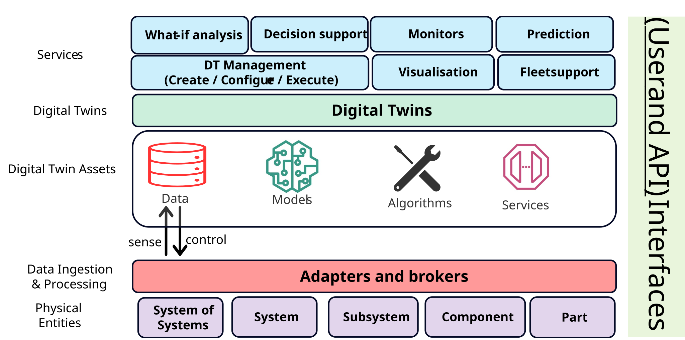

Digital Twins: An Introduction to Beginners
Disclaimer: This article has been generated using chitragupta. Despite some potential for hallucination, the ideas communicated in this tutorial are accurate. Please send your corrections and suggestions to prasad.talasila@gmail.com
Summary. A digital twin is a virtual representation of a physical system and connected to it through a continuous, two-way flow of data. Digital twins enable monitoring, what-if, fault-diagnosis, and maintenance services of physical systems. This tutorial defines the idea and many types of digital twins, surveys the data, models, and algorithms that form digital twins. This tutorial also covers digital twin standards that let twins interoperate, works through six case studies spanning wind turbines, bridges, aircraft, hospital wards, and greenhouses, and closes with the technical, security, and workforce challenges left unresolved, followed by exercises and a concluding synthesis of the lessons that cut across all of them.
Learning Objectives
By the end of this tutorial, you should be able to:
- Define a digital twin precisely -- and tell one apart from a digital model or a digital shadow by checking which way the data flows and whether the loop back to the physical system is closed.
- Decompose any digital twin you encounter into its three building blocks -- data, models, and algorithms -- and name which specific choices (streaming vs. batch data, physics-based vs. data-driven vs. hybrid models, filtering vs. classification algorithms) a given system has made.
- Distinguish the main model families used inside digital twins, explain the fidelity-versus-cost trade-off that drives the choice between them, and give a real published example of each family in use.
- Explain why standards such as the Asset Administration Shell, ISO 23247, and DTDL exist, what architecture each one implies, and why a real project usually touches more than one of them.
- Analyze a published digital twin case study -- identify its data, model, algorithm, and services, and compare the design choices two different twins make for the same kind of physical asset.
- Anticipate the open technical, security, and organizational challenges a real digital twin project will face beyond the toy stage.
Outline
- Digital Twins: An Introduction to Beginners
- Learning Objectives
- Outline
- 1. Motivation
- 2. What Is a Digital Twin, Really?
- 3. The Building Blocks: Data, Models, Algorithms, and Services
- 4. Why Standards Matter: Industry 4.0, AAS, and Friends
- 5. Case Studies
- 6. Challenges and Open Issues
- 7. Exercises
- 8. Conclusion
- References
1. Motivation
Picture a wind turbine floating far out at sea. You can't just walk up and peer inside it every time something feels off -- a maintenance visit means a boat, a crew, and a very expensive afternoon. So the National Renewable Energy Laboratory and Stiesdal Offshore built something cleverer instead: a live computer model wired to the real turbine's sensors, checked against a full-scale prototype, that estimates loads and stresses the physical sensors alone can't see [@branlard_digital_2024]. That's a digital twin -- and once you notice the pattern, you start seeing it everywhere. At the University of Oslo, the BedreFlyt project runs a digital twin of a hospital ward to simulate patient flow, so planners can spot a bed shortage days before it happens instead of scrambling on the day [@sieve_bedreflyt_2025]. In Extremadura, Spain, engineers built one for a high-speed railway bridge, updating it live during load tests so raw sensor readings turn into a structural model that corrects itself as the data comes in [@chacon_digital_2024]. Different industries, same trick: take a physical thing, give it a virtual counterpart wired to live data, and let the two talk to each other. Each of these three examples is already leaning on one of the specific services a digital twin can provide, even if none of them use that word: BedreFlyt's bed-shortage forecast is a what-if analysis, the turbine's load and stress estimates support predictive maintenance, and the bridge's self-correcting model is itself a monitoring service. Sections 3 and 5 come back to the wind turbine and the bridge in much more detail, once you have the vocabulary to talk about what's actually inside them -- Section 3.6 covers exactly these services.
If the pattern feels like it is suddenly everywhere, that's because it is. Scholarly articles on digital twins grew from 295 in 2015 to over 17,100 in 2022, and general internet search hits from about a million in 2018 to over 17 million in 2023 [@grieves_digital_2024]. Market analysts have valued the digital twin market at 3.1 billion US dollars in 2020 with growth projected to 48.2 billion by 2026 [@alcaraz_digital_2022], and one 2022 industry forecast put the market at 183 billion dollars in revenue by 2031 [@larsen_engineering_2024]. Yet the same author who coined the concept reports engineering graduates arriving in industry having never once heard the term "digital twin" in four years of coursework [@grieves_digital_2024]. That mismatch -- a field growing explosively while curricula stand still -- is exactly the gap a tutorial like this one is meant to help close.
2. What Is a Digital Twin, Really?
Here's a tempting but wrong definition: "a digital twin is a 3D model of something real." A 3D model is just a passive abstraction -- it doesn't know or care what the real object is doing right now. Here's a definition closer to the truth, from the paper that coined the term: a digital twin is a virtual object connected to its physical counterpart by a continuous flow of data in both directions -- sensor readings flow in from the physical side, and decisions computed on the virtual side flow back out to actually change something in the real world [@grieves_digital_2017].
That two-way flow is the whole trick, and there's a quick way to test for it: if data only flows one way -- physical object to model, full stop -- what you have is merely a digital shadow. Only when the loop closes, and the model's output changes the physical object's behavior automatically, do you get a real digital twin [@kritzinger_digital_2018]. In practice, many papers use "digital twin" more broadly for human-in-the-loop or advisory systems; this tutorial keeps the stricter definition for clarity, while treating shadow-to-twin systems as a maturity continuum. Held to the strict test, most deployed systems fall short of the name they advertise: one group of digital twin researchers reports that, in their experience, "the majority of current DT applications are actually digital shadows," with the loop back to the physical asset still closed by a human [@larsen_engineering_2024].
The shadow-versus-twin line can also be drawn more sharply than a which-way-does-the-data-flow test, and manufacturing researchers have found it worth doing. One proposal from production engineering defines the digital shadow as a pure assignment of measured status data to a specific asset at a specific instant -- no interpretation attached -- and the digital twin as what you get when models advance that dataset into statements about the physical asset itself [@bergs_concept_2021]. Their milling example makes the distinction concrete: recording a carbide milling cutter's sintering temperature and powder grain size is a shadow; feeding those measurements through a calibrated model that predicts the resulting grain size in the sintered material, and from it the tool's wear behavior, is a twin. Statistics on the shadow alone revealed a correlation between grain size and tool lifetime -- but no cause-and-effect relationship; only the model-backed twin could speak to causality [@bergs_concept_2021]. On this view a shadow's resolution is capped by its measurement system's sample rate, while a twin's resolution "can be increased at will on the basis of models" [@bergs_concept_2021] -- as compact a summary as any of what a digital twin's models are actually for.
"Digital twin" is not the only name this idea goes by, and the name arrived well after the idea. Grieves sketched the concept in a 2002 University of Michigan presentation, then taught it in that university's first product lifecycle management courses in early 2003 -- under a different name, the Mirrored Spaces Model. The term "digital twin" was attached to it only years later [@grieves_digital_2017]. Grieves' own later retelling adds texture: the model's first public outing was at a Society of Manufacturing Engineering conference in Troy, Michigan, in October 2002, the slide bore no name beyond "Underlying Premise of PLM," and the name "digital twin" was eventually coined by John Vickers of NASA [@grieves_digital_2024]. From the beginning, that model assigned its virtual half two jobs that remain the cleanest statement of what a digital twin is for: replication -- the twin holds all the data of its physical counterpart that its use cases require -- and prediction -- the twin forecasts future states, causally or probabilistically [@grieves_digital_2024]. Meanwhile industries that needed something like it built it under names of their own: a computational megamodel, a device shadow, a mirrored system, an avatar, or a synchronized virtual prototype. Several of the earliest systems matching the pattern predate the term entirely. Logs of patient health history, online operation monitoring of process plants, traffic and logistics management, weather forecasting driven by dynamic data assimilation, remote monitoring of satellites, and real-time detection of leaks in oil and water pipelines all qualify in hindsight, though none of their builders would have used the word [@rasheed_digital_2020].
The idea has an even longer prehistory in the modeling-and-simulation world, and it is worth knowing because it explains why simulation researchers sometimes bristle at being told digital twins are new. In 1991 -- a decade before Grieves' presentation -- the computer scientist David Gelernter published Mirror Worlds, imagining software models of parts of the real world fed by live information streams so that the model stays perpetually up to date: a city's mirror world would track the state of its bridges and the locations of its police cars, and a hospital's would contain digital versions of its patients, doctors, rooms, and medical inventory, with each user viewing whichever aspects they cared about at whatever level of detail [@ali_modeling_2024]. Simulation researchers likewise trace a closed-loop lineage of their own through symbiotic simulation -- a term introduced at a 2002 research seminar for a simulation that exchanges data with the physical system in a closed loop, the physical side sending measurements while the simulation runs what-if experiments to control it [@ali_modeling_2024]. NASA engineers date the whole idea further back still, to the 1960s "living model" of the Apollo missions [@ali_modeling_2024], and NASA also supplied one of the field's most-quoted definitions, from a 2010 technology roadmap: "an integrated multiphysics, multiscale, probabilistic simulation of an as-built vehicle or system that uses the best available physical models, sensor updates, fleet history, etc., to mirror the life of its corresponding flying twin" [@ali_modeling_2024]. Small wonder, then, that a recent commentary from the modeling-and-simulation community asks in its own title whether the digital twin is an evolution of simulation or a revolution. Its answer is worth internalizing even though the authors deliberately leave the question open: what is genuinely new is not the models but the standing, two-way synchronization between model and asset -- a classic simulation study represents the past or a possible future computed from initial assumptions, while a digital twin is about what is happening right now [@ali_modeling_2024].
The lesson for a beginner is to hold the word loosely. What matters is the pattern -- physical asset, virtual model, closed two-way loop. That pattern recurs under many names, across many industries and decades.
Two examples make the loop concrete. The first is deliberately small: a teaching case study built around an incubator -- a styrofoam box fitted with a heatbed, a fan, and three temperature sensors, all wired to a Raspberry Pi, and built for a purpose you can taste: fermenting tempeh, a traditional Indonesian soybean food that must be held near 37.5 °C for one to two days [@gomes_digital_2025]. The biology is what makes the control problem interesting. After roughly twenty hours the fungus doing the fermenting begins producing its own heat, raising the box's internal temperature by as much as 7 °C above its surroundings [@gomes_digital_2025] -- so a controller that merely heats on a fixed schedule will eventually cook its own product. The case study walks through a controller model that reads the real incubator's live temperature sensors, computes a new heater setting, and pushes that setting back to the real heater, no human in the loop [@gomes_digital_2025]. The offshore wind turbine from Section 1 closes the same loop at industrial scale: sensor data streams in continuously, and the twin's estimates feed back into the turbine's own control system [@branlard_digital_2024]. Different scales, same handshake.

It helps to see that two-way loop drawn as software instead of just described in prose. On the physical side sits a logical physical twin: the physical asset itself, plus whatever firmware already reads its sensors and drives its actuators. Plenty of real assets have neither, in which case an add-on firmware card -- an Arduino or Raspberry Pi board is a common, cheap choice -- gets bolted on to bridge the gap. An edge device sits between that logical physical twin and everything else, carrying sense data one way and control commands back the other -- the same closed loop this section keeps insisting on, just drawn as boxes and arrows instead of prose. The digital twin itself turns out to be nothing exotic: ordinary software running on an ordinary operating system on an ordinary computer, distinguished from any other program only by that wire back to a real object. Whatever the twin computes gets handed up to services sitting on top of it, and that's the layer a person, or another piece of software, actually touches -- a structural-health alert, a maintenance recommendation, a what-if simulation result [@talasila_digital_2026].
Definitions of the term have multiplied -- NASA's, Siemens', General Electric's, standards bodies' -- but distill them and the same three ingredients keep precipitating out. One distillation requires exactly: a model of the twinned system, an ever-evolving dataset about that system, and a means of updating the model in accordance with the data [@ali_modeling_2024]. Another, from a book devoted to the engineering of digital twins, wraps the same ingredients in three properties: model-centricity (a digital twin curates a collection of models as its physical twin changes), fidelity (the gap between the twin's perception and reality must be known and managed, because "we need to know how accurate is 'accurate enough'"), and additionality (the twin must add capabilities without compromising the physical twin's own operation) [@larsen_engineering_2024]. That last property does quiet but important work: it is what separates a digital twin from an ordinary control system, since the physical twin should still operate, degraded but functional, if the digital twin goes down [@gomes_digital_2025]. The same book adds a framing subtlety a beginner can miss for years: the thing being engineered is not the digital twin alone but the DT-enabled system -- twin, physical asset, and the communication infrastructure between them, considered together -- and the stakeholders of that system need not be the stakeholders of the physical asset; for some users of the asset, the twin may be entirely invisible [@larsen_engineering_2024].
2.1 Types and Maturity of Digital Twins
Kritzinger's twin/shadow/model split from above isn't the only way researchers have sliced up the concept. Grieves and Vickers, who coined the term, split digital twins by what they're for: a predictive digital twin forecasts how the physical asset will behave next, while an interrogative digital twin is simply queried for the asset's current status, no forecasting involved. A separate, complementary split looks at what part of the lifecycle the twin focuses on: a product digital twin prototypes and validates a design before it's built; a production digital twin validates the manufacturing process itself, ahead of and during actual production; and a performance digital twin tracks the finished product and process together during operation, feeding what it learns back into the next design cycle [@iliuta_digital_2024].
Scale is a third axis: a unit-level twin models a single component; a system-level twin is a collaboration of several unit-level twins representing one larger machine; and a system-of-systems twin connects multiple system-level twins together, spanning the asset's entire life cycle [@iliuta_digital_2024]. The wind turbine from Section 1 is a system-level twin built from unit-level pieces (the tower, the rotor); a whole wind farm's digital twin, coordinating many turbines together, would be the system-of-systems level above it.
None of this happens at once. Several proposed maturity ladders describe how a digital twin typically grows more capable over time. One ladder tracks how much of the twin exists and how it behaves: a partial digital twin starts with just a few tracked parameters (say, temperature and pressure) used to prove out basic connectivity; a digital twin clone adds a fuller, data-backed replica of the product; an augmented digital twin starts correlating current data against historical data to draw conclusions the clone alone couldn't. A second, independent ladder tracks how autonomous the twin is: a pre-digital twin exists before the physical asset does, informing early design decisions; a plain digital twin exchanges data with the built asset in both directions; an adaptive digital twin starts learning operator preferences and makes real-time decisions using supervised machine learning; and an intelligent digital twin goes further still, using unsupervised learning to raise its own accuracy and autonomy without being told what to look for [@iliuta_digital_2024]. A beginner building a first digital twin project is almost always building a partial, pre-digital-twin-stage system -- and that's fine; nobody starts at "intelligent."
These ladders are not confined to manufacturing, either. A scoping review of digital twins for healthcare arrives at a strikingly similar four-rung version from a completely different starting point: a static twin captures only fixed properties; a functional (or mirror) twin adds dynamic behavior, enough for surgical planning or simulated clinical trials; a self-adaptive twin acquires real-time patient data and updates its own model; and an intelligent twin adds autonomy in learning and reasoning, able to communicate with other twins [@katsoulakis_digital_2024]. Two research communities that rarely read each other's journals converging on "start static, grow toward autonomous" is decent evidence that the ladder reflects something real about how these systems actually get built.
Practitioners in wind energy use yet another version, a six-level capability scale that is handy because each level names what the twin can do: standalone (no real-time connection), descriptive (real-time data aggregation and visualization), diagnostic (detects anomalies and diagnoses failures), predictive (forecasts future states), prescriptive (adds uncertainty quantification, what-if analyses, and recommendations), and autonomous (acts on the asset without a human in the loop) [@stadtmann_diagnostic_2024]. Published deployments cluster toward the bottom of such scales -- the diagnostic twin those authors built for a real floating wind turbine sits at capability level 2, and they say so plainly [@stadtmann_diagnostic_2024], a candor worth imitating in your own project write-ups.
There is also a finer-grained way to slice the space between "not quite a twin" and "fully autonomous twin," borrowed from software engineering's habit of naming recurring design patterns. One catalog documents nine reusable digital twin architecture patterns -- Digital Model, Digital Generator, Digital Shadow, Digital Matching, Digital Proxy, Digital Restoration, Digital Monitor, Digital Control, and Digital Autonomy -- each written up the way software patterns usually are, with the context it fits, the problem it solves, and the solution structure [@tekinerdogan_systems_2020]. The last three form a ladder of increasing autonomy that echoes the maturity ladders above: a Digital Monitor merely observes, a Digital Control twin adds a feedback loop whose control parameters are still set externally by a client, and a Digital Autonomy twin defines and adjusts its own control parameters, learning from dynamically changing situations [@tekinerdogan_systems_2020]. When the catalog's authors checked the patterns against three real agricultural projects, every project turned out to have started as a plain digital model or shadow and only later grown into a twin, with monitoring and control patterns layered on top [@tekinerdogan_systems_2020] -- the same "nobody starts at intelligent" lesson, observed in the field.
2.2 Why Build One? Uses and Benefits
Why go to the trouble? The AIAA and the Aerospace Industries Association's joint position paper on digital twins puts it plainly: the value of a digital twin comes from moving work out of the expensive, slow physical world and into a cheap, fast virtual one, then feeding the results back to actually change what happens physically. That value shows up differently depending on what stage of a product's life the twin is watching. A digital twin can shadow a product through its entire life cycle: the "as designed" phase, where a virtual prototype is analyzed and refined before a single physical part is cut; the "as built" phase, where a twin of the actual manufacturing process helps catch defects and optimize throughput; and the "as used" and "as maintained" phases, where a twin of the operating asset tracks wear, predicts failures, and extends service life. Whatever question the twin is being asked to answer, its output usually falls into one of four buckets: descriptive (what is happening right now), diagnostic (why did it happen), predictive (what will happen next), or prescriptive (what should be done about it) [@noauthor_digital_nodate-1].
Concrete applications range far wider than the wind-turbine-and-bridge examples in Section 1 might suggest. On the aerospace side, a digital twin of a single material coupon can combine physics models, physical experiments, and machine learning to characterize how a material behaves under uncertainty, while a digital twin of a flight-test vehicle -- including the individual test pilot's characteristics -- can be used to plan test flights that extract the most engineering knowledge per flight hour [@noauthor_digital_nodate-1].
A survey of digital twins across many fields shows the same pattern spreading much further. In medicine, an organ-on-a-chip studies how different drugs affect human tissue, substituting a digital twin for the human test subject to obtain the same information; combining several such chips yields a body-on-a-chip overview of the whole organism. Neural networks trained on electrocardiogram (ECG) data can classify heart rhythms and diagnose circulatory pathologies. Emotion-recognition twins built from webcam images have been proposed to detect stress and depression early, so medication can be given in advance of a crisis. In automotive manufacturing, a digital twin of a bodywork production line can check whether production can proceed according to plan, test the line's adaptability to abnormal scenarios, and evaluate proposed changes to product ordering. At city scale, a smart-city twin integrates Building Information Modeling (BIM) with Geographic Information System (GIS) data: GIS supplies the city's geospatial context, BIM the detailed engineering models, and the pair together supports sustainable urban design [@iliuta_digital_2024].
BIM appears twice in this tutorial for unrelated reasons: once as the IFC format carrying a single bridge's geometry, and once as half of an entire city's digital twin. That overlap is worth noting. "Standards for digital twins" and "standards a digital twin project inherits from its own industry" are not separate categories in practice.
Medicine deserves a longer look than one paragraph, because it is where the physical-asset vocabulary gets stretched furthest: the "asset" is a person. A scoping review of digital twins for health found published work concentrated on patient care -- particularly lung and breast cancer, cardiovascular disease, and clinical trials -- and it collects examples that make the pattern concrete [@katsoulakis_digital_2024]. The Living Heart project, a collaboration launched in 2014 between Dassault Systèmes and the US Food and Drug Administration, crowdsourced a validated virtual model of the human heart that is now used to examine organ-drug interactions in silico and to refine cardiac device designs [@katsoulakis_digital_2024]. In-silico trials push the idea from one patient to a whole cohort of virtual ones: the VICTRE study compared two breast-imaging methods using 2,986 synthetic image-based virtual patients, and its findings correlated well with a real clinical trial in which 400 women received both imaging methods [@katsoulakis_digital_2024]. The catalog runs on from a digital twin of COVID-19 patients' lungs, built to optimize the allocation of scarce ventilators, to "synthetic control arms," where virtual patients stand in for a trial's control group -- in one cited case, 68 such patients supported extending a lung-cancer drug's coverage across 20 European countries [@katsoulakis_digital_2024]. The economics explain the enthusiasm -- bringing a new drug to market costs about 2.6 billion US dollars and takes about ten years, so any virtual substitute for part of that pipeline is worth a great deal [@katsoulakis_digital_2024]. A related position paper is careful about what such a twin is not, though. Its authors observe that most of today's healthcare twins are "highly specialised, highly focused patient-specific models" -- informed by personal patient data at least once in their lifecycle, but only rarely running in real time -- and their proposed Virtual Human Twin is explicitly "not a gigantic digital twin" but a shared infrastructure of data, models, and operating procedures that makes building and validating individual medical twins easier [@viceconti_position_2024]. That distinction -- one focused twin per clinical question, plus shared infrastructure underneath -- is one the industrial digital twin world is converging on too, under the banner of reusability.
Agriculture supplies some of the most down-to-earth examples on record, courtesy of three European Internet-of-Food-and-Farm projects used to evaluate the pattern catalog from Section 2.1. An arable-farming twin combines low-cost, geo-localized soil, crop, and climate sensing with agro-climatic and economic models to manage zones within a single field; the "Happy Cow" project fits dairy cows with 3D activity sensors (on the neck, for instance) and streams cow-level and herd-level data over long-range wireless networks into cloud analytics for health and heat detection; and a greenhouse-tomato twin supports water and energy efficiency and traceability across an entire supply chain [@tekinerdogan_systems_2020]. It is worth pausing on the cow: mobile, biological, and distinctly unmachinelike, it nonetheless fills exactly the same physical-twin role Section 1 gave a wind turbine.
Zoom out from individual examples and a survey of industrial IoT digital twins reports the same handful of use cases recurring across almost every deployment it studied: smart manufacturing, product design, supply-chain management, predictive maintenance, and remote diagnosis [@xu_survey_2023]. None of those five is exotic on its own, and that's rather the point -- most real digital twin projects aren't chasing a novel application so much as applying the same physical-asset-plus-virtual-model pattern to whichever of these ordinary, recurring business problems is costing the most money to solve the old way.
One more use deserves separate billing: the digital twin as a teaching technology. Grieves -- the same Grieves who coined the concept -- has argued that the standard digital twin types map naturally onto engineering education: a digital twin prototype lets students explore and validate a design far more cheaply than building it physically; a digital twin instance, connected to an individual physical product, teaches them what sensor data to collect and how to design the sensing; and aggregated twins supply synthetic data for prediction and machine-learning coursework [@grieves_digital_2024]. His sharpest exhibit is an industry-sponsored capstone project in which a mixed team of students and aerospace-company employees built and analyzed a digital twin of a multi-domain aircraft fuel system, then a scale physical prototype whose measured performance matched the twin's predictions within a few percentage points -- and at the final design review, the reviewers could not tell the students from the employees [@grieves_digital_2024].
That breadth is itself the point. A digital twin isn't a single off-the-shelf product; it's a pattern -- physical asset, virtual model, two-way data flow -- that keeps turning out to be useful nearly everywhere someone is willing to invest in building the virtual half.
3. The Building Blocks: Data, Models, Algorithms, and Services
Zoom in on that loop from Section 2 and you'll find it isn't one thing -- it's three things, stitched together. Every digital twin worth the name needs to move data, run it through a model, and let some algorithm decide what to do with the result. That same three-part shape holds together whether you're twinning a wind turbine or a hospital ward. Once those three pieces are combined and arranged into an architecture, they surface as the services -- monitoring, what-if analysis, predictive maintenance -- that a person or another piece of software actually interacts with. The rest of this section takes each piece in turn.

The picture is deliberately spare: a physical twin feeds a digital twin, and the digital twin in turn uses data, a model, and algorithms, all of which get evaluated against a shared environment rather than in a vacuum. That word "uses" is doing real work. A platform paper describing how digital twins get built out of reusable pieces makes the same point more formally: only an algorithm (that paper splits it into a function asset and a tool asset) is allowed to use a model or a piece of data -- data and models never invoke each other directly -- and a specific combination of the three is what turns a pile of reusable assets into one concrete digital twin rather than another [@talasila_composable_2025]. This tutorial folds that paper's separate function and tool categories into the single label algorithms, purely to keep the vocabulary from multiplying past what a beginner needs to track.
3.1 Data
Data is the raw material: the temperature readings, vibration spectra, and bed-occupancy counts flowing in from the physical side. But "data" is not one thing, and the shape it takes changes what you can do with it. Some of it is structured -- a clean row of numbers with a known meaning, like a rotor-speed reading tagged with a timestamp. Some of it is semi-structured or unstructured -- a maintenance technician's free-text note, a photo of a cracked weld, a video clip from an inspection drone -- and needs real interpretation before any model can use it at all. There's also a split in how the data arrives: some pipelines process it in batches, collecting a large chunk and crunching through it all at once, while others are built for time-series or streaming data, where new readings show up continuously and have to be handled a little at a time, in something close to real time [@xu_survey_2023].
That streaming data has to get from the physical sensor to wherever the twin actually lives, and that's a communication problem, not just a data problem -- which is where the digital twin world runs straight into the wider Internet of Things (IoT) ecosystem. Two surveys already sitting in this project's bibliography map that overlap in useful detail. One traces how digital twins for the Industrial Internet of Things lean on open-source streaming tools such as Apache Kafka and Apache Spark to move batch and time-series data around once it arrives [@xu_survey_2023]. The other catalogs the communication protocols that actually carry the bytes before that: MQTT and CoAP for lightweight publish/subscribe messaging between small, low-power devices, HTTP and HTTPS where a heavier request/response exchange is acceptable, and LoRaWAN where the sensor is far away and battery life matters more than bandwidth [@hakiri_comprehensive_2024]. None of these protocols is "the" protocol for digital twins; picking one is mostly a question of how much power, bandwidth, and latency the physical side of the twin can spare, and real deployments often mix several -- MQTT from a nearby gauge, LoRaWAN from a remote one, all landing in the same streaming pipeline.
Whichever protocol gets the bytes there, raw sensor data is almost never usable straight off the wire. A temperature sensor might report in Fahrenheit when the model expects Celsius; a vibration sensor might spit out noisy readings that need filtering before anything downstream can trust them; a firehose of per-second measurements might need batching into slightly larger chunks before a model can digest them efficiently. None of that cleanup logic is specific to any one digital twin; a unit-conversion routine works the same whether it cleans turbine data or hospital data. So these small, unglamorous routines tend to get written once and reused across many twins, usually through off-the-shelf tool chains built for exactly this kind of heavy lifting rather than hand-rolled per project [@talasila_realising_2024]. It's easy to skip past this step when you're first learning about digital twins, since "data cleanup" sounds far less interesting than "physics simulation" -- but a beautifully built model fed garbage data will confidently produce garbage output, so in practice this unglamorous layer is where a lot of a real digital twin project's engineering time actually goes.
At the level of concrete plumbing, even the desktop-scale incubator runs a full data pipeline: its services exchange messages through a RabbitMQ broker (an implementation of the AMQP messaging protocol), store their time series in the InfluxDB database, and chart them in Grafana dashboards [@gomes_digital_2025] -- the same publish/subscribe shape as an industrial deployment, scaled down to a styrofoam box. Nor is "the data" usually one organization's property. An analysis of digital-twin-based predictive maintenance identifies four distinct data types a mature service needs -- equipment operating data from the asset's user, manufacturing environment data, resource state data from whoever provides the maintenance resources, and scheduling data from third-party service providers [@zhong_overview_2023] -- a reminder that a twin's data pipeline often crosses company boundaries, with all the contractual friction that implies.
Once data is flowing, it typically passes through a layered software stack rather than going straight from sensor to model. One widely used framework for industrial IoT platforms splits the stack into four layers: a data layer that represents the different sources and enterprise systems feeding the twin; an integration layer that dispatches well-formed information to the rest of the stack; a service layer that chains services together and manages the twins themselves; and a business layer that connects the whole pipeline to the actual business logic driving decisions [@minerva_digital_2020]. Two further data problems are easy to overlook until they bite. The first is data fusion: merging readings from sensors that measure overlapping or complementary things into one consistent picture rather than several disagreeing ones. The second is data security. A twin that faithfully mirrors a physical asset also faithfully mirrors an attack surface, and tampering with the data feeding a twin -- or with the twin's stored history -- corrupts every decision made downstream of it [@wu_comprehensive_2023].
Not all of a twin's data comes from the same place, either. It's useful to separate static modeling data (the asset's fixed design parameters), dynamic interaction data (live sensor readings that change moment to moment), and service knowledge data (accumulated know-how about how to interpret the first two) [@wu_comprehensive_2023]. Sensors themselves can also fail or go missing, and a surprisingly common fix borrows the digital twin idea recursively: train a machine-learning model to act as a virtual sensor, estimating what a broken or absent physical sensor would have reported, using the other, still-working sensors and the twin's own model as context [@wu_comprehensive_2023]. Taken far enough, the same trick -- a digital twin of the sensing device itself, compensating for gaps in the very data the main digital twin depends on -- shows up as its own small, nested digital twin problem sitting inside the larger one.
How hard the data side is varies enormously by domain, and a medical example shows the ceiling. An operational twin's data are noisy -- the heart is beating while you measure it, the aircraft may be flying -- collected non-destructively within whatever the asset's operation tolerates, sparse in both space and time, and arriving at wildly different latencies: heart rate streams in real time, but a scan of the heart's anatomy might come every six months [@niederer_scaling_2021]. A twin has to fuse all of that into one coherent, continuously updated picture anyway.
When many similar assets are involved, it also pays to standardize how the data is organized, not just how it is cleaned. Wind-farm researchers built the PBSHM Schema, a database schema that restructures each operator's raw SCADA data by structure and collection time into uniform channel documents, precisely so that "generic algorithms that can function across the varying datasets, regardless of the turbine owner or type" become possible [@bull_data-centric_2023] -- the data layer's version of the reusability argument this section started with.
3.2 Models
The model is where the twin actually knows something about the physical world. There isn't just one kind, though, and the literature on digital twins tends to sort them into a small number of recurring families.
Physics-based models start from known physical laws -- structural mechanics, fluid dynamics, the equations describing how a solid bends or a fluid flows -- and simulate them directly. Within this family, a useful further split is by how the model treats time. A continuous-time (CT) model describes a system's physical state as it evolves smoothly -- typically a set of ordinary differential equations relating quantities such as position, velocity, and acceleration -- and since most such equations are too complex to solve analytically, a digital twin instead uses numerical integration, stepping the simulation forward in small time increments and trading a smaller step size for a more accurate but slower-running result, the same fidelity/cost trade-off in miniature [@carreira_foundations_2020]. A discrete-event (DE) model instead represents a system whose state changes only at distinct instants -- a controller deciding whether to switch a heater on or off, or a supervisory system recovering from a detected fault -- using formalisms such as finite state machines or Petri nets [@carreira_foundations_2020]. A physical asset with any onboard control logic typically needs both: its physical dynamics captured in continuous time, and its controller captured as a discrete-event model. A particularly common and widely used continuous-time model is the Finite Element Model (FEM), which handles problems too geometrically complex for a closed-form equation -- structural stress, electromagnetic fields, heat and fluid flow -- by discretizing the object itself into a mesh of small, simple elements and solving the governing equations across that mesh instead of over the whole shape at once; a finite element model of a beam bending under load, or a computational-fluid-dynamics model of airflow around a wing, are typical examples [@thelen_comprehensive_2022]. A related, domain-specific case is Building Information Modeling (BIM), which represents a building or piece of infrastructure's physical and functional characteristics for design and construction purposes; Section 2.2 already met BIM as half of a smart-city digital twin, and it belongs here too, as another, model-categorization view of the same recurring idea. The trade-off across every one of these variants is always fidelity against computational cost. A model detailed enough to capture every bolt and weld is far too expensive to run in real time. Practical digital twins therefore use a deliberately lower-fidelity physics-based model, accepting a small, quantified loss of accuracy in exchange for one that keeps up with live sensor data [@thelen_comprehensive_2022].
Statistical models take a different approach: instead of encoding physical laws, they fit a mathematical structure -- an autoregressive model, a stochastic process -- directly to measured data, without necessarily explaining why the system behaves that way. They show up twice in digital twins: identifying a dynamic system's behavior from sensor measurements (a task called system identification), and modeling how a physical asset degrades over time to support predictive maintenance. In both cases the appeal is the same: statistical models tend to need far less computation than a detailed physics-based simulation, at the cost of not really explaining why the numbers come out the way they do [@thelen_comprehensive_2022].
Machine-learning (data-driven) models go a step further and let a general-purpose learning algorithm find the pattern in the data itself, with no assumption about its mathematical form at all. These range from comparatively simple methods, like random forests and Gaussian process regression, to deep neural networks -- convolutional networks, LSTMs -- trained on large amounts of sensor data, and they are commonly split into supervised approaches that learn from labeled examples and unsupervised ones that find structure in unlabeled data on their own [@iliuta_digital_2024]. They earn their keep precisely where physics-based modeling struggles: when the underlying physics is poorly understood, or well understood but too expensive to simulate at the speed a digital twin needs. The price is data -- a machine-learning model is only as good as the examples it was trained on, and it can fail badly on situations that look nothing like anything it has seen before [@thelen_comprehensive_2022]. When the thing being learned is a dynamical system -- a system whose state evolves over time, which is most of what digital twins model -- a survey of neural-network simulation models offers a two-way split worth remembering: direct-solution models take time itself as an input and learn one particular trajectory, while time-stepper models learn the system's dynamics, computing the next state from the current one the way a numerical solver does. The consequence is practical: time-steppers cope with new initial conditions and new inputs by construction, while a direct-solution model must be retrained for each new scenario [@legaard_constructing_2023]. The same survey covers physics-informed neural networks, trained with a loss function that penalizes disagreement with the governing equations -- a bridge to the hybrid family below -- and hidden physics networks, whose extra output can recover a physically meaningful but unmeasured quantity because the equations constrain what it must be [@legaard_constructing_2023].
Hybrid models try to get the best of both worlds by combining a physics-based model with a data-driven one. One common approach trains a neural network with a loss function that penalizes any prediction violating a known physical law; another runs a physics-based simulation purely to generate extra training examples for a machine-learning model that would otherwise not have enough real data. The result generalizes better than pure machine learning while staying far cheaper to run than a full physics-based simulation -- essentially borrowing the physics model's ability to stay sensible outside the training data, and the data-driven model's ability to run fast [@thelen_comprehensive_2022]. (The word "hybrid" also gets used for systems that mix continuous and discrete-event behavior within a single sub-system -- related in spirit, since both pair two different ways of capturing behavior, but not the same idea as the physics-plus-ML combination here.)
| Model type | What it's built from | Typical use in a digital twin |
|---|---|---|
| Physics-based | Known physical laws (structural, thermal, fluid equations) | Simulating a system's behavior directly from first principles [@thelen_comprehensive_2022] |
| Statistical | A mathematical structure fitted to measured data | Identifying dynamic system behavior; modeling long-term degradation [@thelen_comprehensive_2022] |
| Machine-learning | A general-purpose learning algorithm trained on data | Capturing patterns too complex, or too expensive, to simulate from physics alone [@thelen_comprehensive_2022] |
| Hybrid | A physics-based model combined with a data-driven one | Improving generalization over pure ML while staying cheaper than full physics-based simulation [@thelen_comprehensive_2022] |
Choosing among these four families is itself a design decision, not something forced by the physics alone: A digital twin can be modeled with first-principles heat-transfer equations, with a data-driven regression fit to logged temperatures, or with a hybrid of both, and picking one over another trades off precision, development cost, and how well the result generalizes to conditions the model has never seen [@abbiati_modelling_2024]. The National Academies' digital twin report offers a useful compass for the choice: where data are abundant and the decisions to be made lie within the conditions the data already cover, the data form the twin's core and the model can be largely empirical; in data-poor settings, or when the twin must extrapolate beyond anything yet observed, the models form the core and the data are assimilated through them [@committee_on_foundational_research_gaps_and_future_directions_for_digital_twins_foundational_2024]. A related industrial vocabulary is worth picking up here too: model-order reduction, the family of techniques for shrinking a high-fidelity model into one small enough to run against live data, which practitioners sort into black-box approaches (learn a small stand-in from simulation data), grey-box, and white-box approaches (mathematically reduce the equations themselves -- with the advantage that some white-box methods carry rigorous accuracy guarantees) [@hartmann_executable_2022]. Whichever family is chosen, a model built once and never touched again will slowly drift from the real asset it's supposed to represent -- through wear, repairs, or simply conditions the original model never anticipated -- so a production digital twin needs a plan for updating its model over time. That may mean periodically retraining a machine-learning model on fresh data, or using one of the state-estimation methods in Section 3.3 to nudge a physics-based model's internal state back toward what the sensors report [@wu_comprehensive_2023].
Each of the four families is easiest to remember through a published academic example -- a research group that made the choice, documented it, and reported honestly how it went.
A physics-based example: the cardiac digital twin. Research groups building digital twins for heart-failure patients follow a loop that is worth tracing step by step. The patient receives an electrocardiogram and a cardiac CT scan on day 0; an inverse problem is then solved -- adjusting a mechanistic heart model until its output matches those measurements -- to infer the patient's specific anatomy, material properties, and boundary conditions; the resulting day-0 twin predicts what the day-10 rescan should show, which validates it; and the day-0 parameters become statistical priors when the twin is updated again at day 35 [@niederer_scaling_2021]. Each cycle leaves behind "a dynamic digital history" of that one heart. The same authors are frank about the scale problem: early clinical examples each involve ten or fewer patients, often requiring computing facilities no hospital has, while a clinic sees a new patient every 10 to 15 minutes [@niederer_scaling_2021].
A statistical example: the population "form." In structural health monitoring, a single structure's measured signals cover only a fraction of the operational, environmental, and damage conditions it could ever meet, and labeled damage data are usually incomplete or absent [@bull_foundations_2021]. Population-based monitoring answers with a form: a statistical model -- for wind-turbine power curves, a Gaussian process -- whose mean captures the essential shape of a feature across a whole population of similar structures and whose variance captures the expected differences between healthy members [@bull_foundations_2021]. Fitted to 125 weeks of operating data from a real Vattenfall wind farm, a mixture-of-Gaussian-processes version of the form learned on its own to separate normal operation from operator-imposed 50% power curtailment -- which looks alarming in the data but is not damage -- while still flagging the genuinely bad power curves as outliers [@bull_foundations_2021]. The statistical model never explains why a curve is bad; it just knows, calibratedly, what normal looks like.
The population idea scales well beyond power curves. The same wind-farm research program shares information across turbines and across models: a graph neural network treats each turbine in a farm as a node, so it can generate the wake-induced wind deficit one turbine casts on another -- trained on one simulated farm layout and tested on a different one, it predicted the deficit accurately for turbines more than 200 meters apart [@bull_data-centric_2023]; an ensemble method fuses ten different stochastic simulators of fatigue loading on a 30-meter turbine blade, letting subgroups of concurring simulators reinforce each other in the regions where each is reliable [@bull_data-centric_2023]; and a dual Kalman filter estimates an unknown distributed force on a blade jointly with the blade's state, then reconstructs the response at every unmeasured location [@bull_data-centric_2023] -- the virtual-sensor idea from Section 3.1, yet again.
A machine-learning example: surrogates and a very small network. One structural study built a deep-learning surrogate for an L-shaped concrete cantilever monitored by eight displacement channels: the full finite element model has 4,659 degrees of freedom, so a reduced-order version with just 14 basis functions generated 10,000 cheap training simulations, and a two-part network (a fully connected part plus an LSTM) learned from those plus only 1,000 expensive full-order simulations. The combined multi-fidelity network reproduced ground truth with a worst-case correlation of 0.983, where the high-fidelity network alone managed at best 0.791 [@torzoni_deep_2023]. At the other extreme of model size, a diagnostic twin of Zefyros -- the world's first full-scale floating offshore wind turbine -- detects anomalies with a dense neural network of just three layers of eight, five, and one neurons, one such network per gearbox temperature signal, trained on a year of data. It flagged a generator anomaly 7.8 hours before the turbine stopped for 4.2 days, with no false positives -- an event the turbine's commercial monitoring system had not identified [@stadtmann_diagnostic_2024]. The authors report that larger networks overtrained, and that a fancier LSTM variant failed to detect the same fault reliably [@stadtmann_diagnostic_2024]. In digital twins, bigger machine learning is not automatically better.
A hybrid example: battery prognostics. Predicting a lithium-ion battery's remaining useful life offers a clean before-and-after. An "augmented" framework keeps an empirical capacity-fade model as the primary predictor, then trains machine-learning models to predict and correct that model's error. Across five datasets totaling 237 cells, the correction cut root-mean-square error by 40% on average; on one 48-cell dataset it took the error from roughly 397 cycles down to 67 [@thelen_augmented_2022]. The telling comparison is against a purely data-driven model, which achieved similar raw accuracy on that dataset but with far worse calibration -- its confidence intervals could not be trusted -- while the hybrid kept the model-based approach's honest uncertainty estimates [@thelen_augmented_2022]. A follow-on study of early battery-degradation forecasting adds a second moral: when coupled physics-plus-learning models were tested on cells operated outside the training distribution, the most robust performer was the simplest -- a small linear model trained end-to-end through the physics -- which beat far larger neural networks at extrapolation [@li_coupling_2025].
3.3 Algorithms
A model by itself doesn't do anything; it just sits there providing simplified abstraction of a physical twin. Something has to actually run the numbers, and that something is what the literature -- depending on which paper you're reading -- calls an algorithm, a tool, or a method. All three names point at the same idea: a software implementation of a domain-specific procedure that takes a model and some data and evaluates it [@talasila_realising_2024]. Each model type from Section 3.2 tends to come with its own family of algorithms built specifically to evaluate it.
For a physics-based model, the workhorse algorithm is a numerical solver: finite element analysis (FEA) for structural stress and strain, or computational fluid dynamics (CFD) for thermal and airflow problems, each breaking the object into a mesh and solving the governing equations at every point in it. The finer the mesh, the more accurate the result -- and the longer the solver takes to run, which is the same fidelity/cost trade-off from Section 3.2 showing up again, now as a runtime cost instead of a modeling choice [@thelen_comprehensive_2022].
For a statistical model, a common algorithm family is system identification -- methods like the nonlinear autoregressive exogenous (NARX) model or stochastic subspace identification (SSI), which fit a mathematical structure to sequences of sensor measurements. A closely related algorithm, the Kalman filter, estimates a system's current internal state from noisy measurements by continuously blending a model's prediction with each new sensor reading as it arrives -- neither trusting the model blindly nor the noisy sensor blindly, but combining the two in proportion to how much each is trusted at that moment [@thelen_comprehensive_2022].
For a machine-learning model, the algorithm is a training procedure -- backpropagation for a neural network, or a kernel-fitting procedure for Gaussian process regression -- that adjusts the model's internal parameters until its predictions match a set of training examples closely enough. In many deployments, the model is initially trained offline before the twin goes live; what runs inside the twin in real time is usually the already-trained model doing fast inference, not the full training procedure itself. In long-lived systems, retraining can still happen periodically or continuously as new data accumulates [@thelen_comprehensive_2022; @wu_comprehensive_2023].
For a hybrid model, the algorithm has to coordinate both halves at once: a physics-informed loss function trains a neural network while penalizing any prediction that violates a known physical law, or a delta-learning procedure trains a machine-learning model specifically to learn the discrepancy left over by a simplified physics-based model. Both are ways of dividing the same labor: let the physics-based half handle what's already well understood, and let the data-driven half absorb whatever the physics-based model gets wrong [@thelen_comprehensive_2022].
Two more algorithm families deserve a place in the toolbox. The first is the inverse problem solver, also called data assimilation: given measurements of what a system actually did, work backwards to the model parameters that best explain them. This is the step that turns a generic heart model into one particular patient's heart, by "formulating an inverse/data assimilation problem and solving it via optimization and/or sampling-based algorithms" [@niederer_scaling_2021]. A widely used sampling approach, Markov chain Monte Carlo (MCMC), produces not one best-fit answer but a probability distribution over answers -- at the price of needing thousands of model evaluations, which is precisely why the surrogate models of Section 3.2 exist. One structural-monitoring study runs its MCMC damage-localization chains against a trained neural-network stand-in rather than against its 4,659-degree-of-freedom finite element model directly [@torzoni_deep_2023].
The second is the explanation algorithm. When a twin's machine-learning model flags an anomaly, an engineer's first question is "why?", and attribution methods such as SHAP (Shapley additive explanations) answer it by dividing responsibility for the model's output among its inputs. The floating-turbine diagnostic twin from Section 3.2 does exactly this: when its anomaly detector fired, the SHAP values pointed overwhelmingly at the generator temperature input, telling operators not just that something was wrong but where to look [@stadtmann_diagnostic_2024].
Not every machine-learning algorithm trades away interpretability for accuracy, either. Optimal classification trees are a good example: a more recent, exact optimization approach to building decision trees, has been used to predict damage to aircraft blades [@kapteyn_toward_2020]. That combination -- competitive accuracy without giving up the ability to explain why the algorithm decided what it decided -- matters more in a digital twin context than in most machine-learning applications, since a twin's output often feeds directly into a real-world safety decision.
Put the three pieces together and you get the whole loop from Section 2 back again: data flows in, an algorithm evaluates it against a model, and the result flows back out to the physical twin. Change any one piece -- swap in a better model, plug in a faster algorithm, or feed it richer data -- and the twin improves without touching the other two pieces at all. That's the entire point of treating data, models, and algorithms as separate, swappable building blocks instead of one big tangled program.
3.4 Combining Models: Co-Simulation and Hybrid Systems
Section 3.2's four model families are rarely used in isolation on anything beyond a toy example. A real asset usually needs several models built by different specialists, in different formalisms, for different sub-systems -- a finite element model of a beam from a structural engineer, a statechart describing a controller's logic from a software engineer -- and at some point those separately built models have to be coupled together into one working digital twin [@abbiati_modelling_2024].
Co-simulation is the most common way to do that coupling without forcing everyone onto the same tool. Instead of rewriting every sub-model in one shared modeling language, each sub-model keeps its own internal implementation private and exposes only a small, standardized interface -- typically three functions: one to read a variable's current value, one to set it, and one to advance the simulation by a short time step [@abbiati_modelling_2024]. The most widely adopted standard for this interface is the Functional Mock-up Interface (FMI), maintained by the Modelica Association and supported by more than 140 modeling and simulation tools, including Simulink, Dymola, OpenModelica, and 20-sim; a model packaged to this standard is called a Functional Mock-up Unit (FMU) [@abbiati_modelling_2024]. Co-simulation lets a structural engineer's finite-element model and a controls engineer's statechart be combined into one digital twin without either engineer needing to learn the other's tool, or disclose the proprietary internals of their own.
How well does this work outside the lab? Co-simulation's footprint is wide -- a keyword analysis found its publications spread across engineering (40%) and computer science (25%), with citations growing steadily since 2000 [@schweiger_empirical_2019] -- and a two-round expert study of practicing co-simulation engineers, drawn from energy, software, automotive, maritime, and avionics domains, found FMI to be "by far the most commonly used standard for any kind of co-simulation." The same study also surfaced where practice still hurts. The experts' top-rated current challenges were not exotic mathematics: the information technology prerequisites of cross-company collaboration, poor communication between theorists and practitioners, and -- tellingly -- how to judge whether a co-simulation's results are valid at all [@schweiger_empirical_2019]. That last worry deserves a beginner's respect. Wiring two individually correct models together does not automatically produce a correct coupled simulation, because the coupling itself -- how large a step the orchestrator takes between data exchanges -- introduces numerical error of its own; the same study's experts ranked the choice of that macro step size and numerical stability among their leading concerns [@schweiger_empirical_2019].
Packaging matters here too, enough that industry has coined a name for the packaged artifact: the executable digital twin (xDT), defined as a self-contained, executable representation of one specific behavior of the asset, instantiated from the full digital twin for a specific purpose and deployment target -- an FMU for co-simulation, an ONNX file when the model is a neural network, a Docker container when it ships as a microservice [@hartmann_executable_2022]. The point of the extra name is reuse with traceability: unlike an ad-hoc embedded model, an xDT stays explicitly linked to the digital twin it was derived from. The industrial examples show why the idea earns its keep. A thermal model of an electric motor, shrunk by model-order reduction and calibrated online by a state estimator, acts as a virtual sensor for rotor temperature that no physical sensor can reach -- Section 3.1's virtual-sensor idea, productized -- and in robot milling, combining first-principles process-force prediction with online calibration at roughly 5-millisecond update rates reduced the machining errors of robots by 90% [@hartmann_executable_2022]. The same catalog includes a failure analysis of a truck anchorage reconstructed from only four available strain measurements, and fail-safe testing of an electric vehicle's propulsion control unit against simulated faults -- short circuits, lost communication, torque inversion -- injected over the vehicle's own network, with packaged twin models standing in for the vehicle and its other three wheel motors [@hartmann_executable_2022]. The practitioners' own wish list, for what it's worth, puts user-friendly tooling -- predefined orchestration algorithms, integrated error estimation -- at the top of co-simulation's opportunities [@schweiger_empirical_2019].
Not every combination problem is solved by wrapping separate tools, though. Some systems are inherently hybrid: they mix genuinely continuous behavior (a temperature drifting smoothly) with genuinely discrete behavior (a thermostat switching a heater on or off) within a single sub-system, not across two separately built ones.
The incubator mentioned in Section 2 is a case in point, and it is worth describing concretely, since one modelling text uses it as a running example throughout. The device is a Styrofoam box fitted with an electric heater, a fan, and temperature sensors, holding its contents at a controlled temperature anywhere between 20 and 60 °C. Its controller reads those temperature measurements and decides whether to switch the heater on or off; the heater in turn injects thermal power into the air enclosed by the box, raising its temperature [@abbiati_modelling_2024].
Heat transfer inside the box is continuous physics, while the controller deciding when to switch the heater is a discrete state machine. Neither description alone is enough. A hybrid automaton captures both at once: the system moves between a small number of discrete modes (heater on, heater off), and within each mode its continuous state evolves according to a set of differential equations that apply only in that mode; crossing a threshold triggers a discrete transition to a different mode with different equations [@abbiati_modelling_2024]. Co-simulation coordinates separate models across a shared interface. A hybrid automaton, by contrast, describes one system that has both kinds of behavior built in. Which formalism fits depends on whether a system's continuous and discrete parts were built by different people using different tools, or were always one integrated whole.
3.5 Architecture: Putting the Blocks Together
Data, models, and algorithms are the ingredients; architecture is the recipe for how they're arranged into a working system -- and different research groups have converged on genuinely different answers.
One influential proposal extends Grieves' original three-part sketch (a physical twin, a digital twin, and a connection between them) into a five-dimension model: physical twin, digital twin, connection, digital twin data (the twin's own accumulated data, distinct from live sensor readings), and services (the functions -- simulation, prediction, decision support -- that the twin exposes to the humans and software around it) [@tao_five-dimension_2019-1].
A second proposal, aimed specifically at industrial IoT deployments, arranges a twin into three layers instead of five: a virtual asset layer holding the data, models, and virtual entities that make up the twin's fundamental components; a real-time "3C" layer (computation, communication, and control) that actually runs the twin's processes in sync with the physical twin; and a visualization and human-machine-interface layer on top, for the people who need to assess and interact with the twin [@xu_survey_2023]. Where Tao's five-dimension model is organized around what a twin contains, this layering model is organized around what a twin does at runtime -- collect, compute, communicate, and display -- and the same physical asset could reasonably be described with either vocabulary.
A third view, closer to Section 3.1's IoT platform stack, comes from manufacturing practice rather than an abstract reference model: data layer, integration layer, service layer, and business layer, stacked in that order so raw sensor data at the bottom is progressively refined into the business decisions at the top [@minerva_digital_2020]. None of these three architectures is simply "correct" while the others are wrong -- they're different lenses on the same underlying idea, chosen depending on whether the person drawing the diagram cares more about a twin's internal structure, its runtime behavior, or its place in a factory's existing IT stack. ISO 23247's own functional architecture is a fourth lens again, this time organized around which named responsibilities (collecting data, controlling the asset, keeping things secure) a compliant implementation must cover -- a reminder that "architecture," in the digital twin literature, usually means "the thing this particular paper's authors found most useful to draw a box around," not a single settled blueprint [@noauthor_iso_nodate-1].

Drawn out, that functional architecture looks like a pipeline running left to right. On the physical side, entities are organized hierarchically -- part, component, subsystem, system, and system of systems -- and adapters and brokers carry their sensor data through a data-ingestion-and- processing stage into a set of digital twin assets: the same data, model, algorithm, and service building blocks introduced earlier in this section, just relabeled in ISO's own vocabulary. From there, user and API interfaces expose decision-support services -- prediction, monitoring, what-if analysis -- while a separate DT-management layer handles the unglamorous work of creating, configuring, and executing twins, and a visualization layer and fleet support sit alongside it, acknowledging that a real deployment rarely means just one twin, but many twins built for large numbers of the same physical-twin type [@noauthor_iso_nodate-1].
Architecture also has to answer a question none of the diagrams above quite settles: where does the twin actually run? One of the earliest worked-out answers, the C2PS reference model for cloud-based cyber-physical systems, hosts every physical thing's twin in the cloud -- each physical device automatically gets a "cyber thing" with a one-to-one connection -- and then lets computation slide between the two sides: a task can run entirely on the physical device, entirely in the cloud twin, or in a hybrid mode that keeps cheap computation local and pushes expensive computation to the cloud, with the mode chosen at runtime by a decision layer weighing communication cost, computation cost, and battery state [@alam_c2ps_2017]. The authors validated the model with a vehicular driving-assistance prototype fusing a smartphone's sensors with the car's on-board diagnostics scanner -- down to combining a locally detected speeding event with cloud-side location and weather services to warn the driver about the road ahead [@alam_c2ps_2017]. The model also shows how twins compose upward: four smart temperature sensors in the corners of a room each get their own cyber thing, and a master cyber thing above them aggregates the four into a single room temperature [@alam_c2ps_2017] -- the unit-to-system hierarchy from Section 2.1, drawn as software. A more recent Industry 4.0 reference model pushes the same thought toward Digital Twin as a Service (DTaaS): five layers -- physical, communication, digital, cyber, and application -- crossed with the shadow-to-twin integration ladder from Section 2.1, so that twin capability can be consumed the way cloud storage is [@aheleroff_digital_2021]. Its validating case study is pleasingly unglamorous: scheduling maintenance for more than five hundred unique constructed wetlands around Auckland, New Zealand, replacing a fixed calendar of inspections with sensor-triggered, weather-aware predictive maintenance [@aheleroff_digital_2021].
Zoom out one more level and the twins start needing management of their own. When many DT-enabled systems are composed -- a wind farm of turbine twins, a fleet of vehicle twins -- the engineering problem becomes systems-of-systems engineering, and an added layer of twin management services is needed to update and orchestrate the constituent twins [@larsen_engineering_2024]. The business shapes are already recognizable: a consumer fitness watch is a business-to-consumer digital twin service, a paid wind-turbine monitoring twin a business-to-business one -- where, as one book on digital twin engineering observes, the twin "can become the means for offering long-term services that could prove more profitable than the physical product" [@larsen_engineering_2024].
None of these architectures builds itself, and the beginner's practical question -- "what software do I actually download?" -- has been studied systematically. One survey graded 14 open-source digital twin frameworks against ten criteria and then implemented the same case study, the incubator from Section 2, in five of them: Eclipse Ditto, Eclipse BaSyx, SAP's Asset Administration Shell implementation, iTwin, and the INTO-CPS co-simulation framework [@gil_survey_2024]. The fourteen tools sort into six natural categories -- structured-data asset-description frameworks, domain-specific tools, twin-description language specifications, geospatial platforms, 3D infrastructure-oriented platforms, and co-simulation frameworks [@gil_survey_2024] -- a taxonomy that doubles as a map of how many different things "digital twin software" can mean. The results are a useful reality check on any tidy architecture diagram. The asset-description frameworks handled connectivity and the physical controller well but had no way to run simulation models at all; the co-simulation framework suited the simulation-heavy services best but struggled to interface bidirectionally with the physical device; and analytics support everywhere topped out at basic integrated dashboards [@gil_survey_2024]. The survey's list of common drawbacks -- missing documentation, too-simple examples, uncertain long-term support -- is worth reading before betting a project on any single framework [@gil_survey_2024].
City-scale twins stress every one of these architectural decisions at once, and a recent smart-city proposal shows what the answers look like when written down concretely. Observing that existing reference architectures are either too generic or manufacturing-specific -- and that "there is currently no standardized DT architecture for smart cities" from any standards body -- its authors decompose the twin into six subsystems (edge, data management, digital twin, event management, resource management, and system management) and validate the stack on urban traffic in Issy-les-Moulineaux, a commune of Paris, using seven months of data [@herath_smart_2024]. The concrete choices read like a tour of this tutorial: traffic observations follow a standardized data model carried by an NGSI-LD context broker, Apache Kafka brokers the events (Section 3.1's streaming tools), an LSTM neural network predicts traffic intensity (Section 3.2's machine-learning family), and everything ships as containers across edge and cloud (this section's where-does-it-run question) [@herath_smart_2024]. Its most tutorial-worthy result is a trade-off made measurable: letting the twin tune how often sensors report, the authors show prediction error staying essentially flat when sampling drops from hourly to two-hourly, then roughly doubling at three-hourly [@herath_smart_2024] -- the data-cost-versus-accuracy dial from Section 3.1, with numbers attached.
3.6 Services
The architectures above keep naming services as one of a digital twin's essential ingredients -- Tao's five-dimension model gave the word its own dimension, and ISO 23247's functional architecture lists prediction, monitoring, and what-if analysis as the decision-support services a user interface exposes. This section looks at what those services actually look like in practice, using the incubator introduced in Section 2 as a running example: the same small system that demonstrated the basic sense-compute-actuate loop turns out to demonstrate each of these more advanced capabilities too, just at a larger scale in a full industrial deployment.
Monitoring is the most basic of these services, and arguably a prerequisite for the rest: before a twin can decide what to do about its physical twin's behavior, it first has to notice something worth acting on. A monitor checks a trace of the physical twin's observed states against a specification of desired behavior, producing a verdict on whether the behavior is acceptable [@frasheri_system_2024]. That specification is usually written in a temporal logic -- a notation for properties spanning multiple points in time rather than a single snapshot -- which distinguishes safety properties (something bad never happens, like the incubator's heater temperature never exceeding 40°C) from liveness properties (something good eventually happens, like the air temperature eventually reaching a target). Linear Temporal Logic (LTL) checks such properties over discrete points in time and returns a binary verdict; Signal Temporal Logic (STL) instead treats time as continuous and returns a robustness value -- a real number whose sign says whether the property holds and whose magnitude says how comfortably [@frasheri_system_2024]. Not every monitor is built from an explicit specification, either: where the desired behavior is hard to write down precisely, a data-driven monitor instead learns what "normal" looks like from historical sensor data and flags anything that deviates from it, an approach that is especially common for anomaly detection across many correlated sensors at once [@frasheri_system_2024].
The incubator makes monitoring concrete at desktop scale. Its monitoring service is a Kalman filter running against the calibrated two-state thermal model, and its anomaly detector simply reuses the filter's prediction error: opening the incubator's lid violates the physical assumptions the model was built on, so the filter stops tracking, and the growing discrepancy between estimate and sensor readings is the anomaly signal. In one reported experiment, two roughly one-minute lid openings were both detected this way, the discrepancy decaying gradually after each closing [@gomes_digital_2025]. The same filter also estimates the heater's own temperature, which no physical sensor in the box measures directly -- Section 3.1's virtual-sensor idea again [@gomes_digital_2025]. The Kalman filter is not the only state estimator in industrial use -- practitioners also reach for the moving-horizon estimator, which fits the recent window of measurements as an optimization problem, both families weighing measurements against model predictions according to how much each is trusted [@hartmann_executable_2022] -- but the Kalman filter is the one a beginner will meet first and most often.
What-if simulation and design space exploration (DSE) let a twin examine several alternative futures side by side before anything actually happens to the physical twin. A what-if simulation runs faster than real time, exploring how the physical twin would respond to a hypothetical intervention -- for the incubator, finding the safest setting for how long a heater boost should run before a planned power outage, by comparing several candidate values in parallel and keeping the one that stays within safe temperature bounds the longest [@frasheri_advanced_2024]. In the incubator's published version of that scenario, three candidate boost durations are simulated side by side -- one overheats unsafely, one best balances temperature against the time available for the power swap -- and the winning parameter is then pushed down to reconfigure the real controller [@gomes_digital_2025]: what-if analysis closing the loop rather than merely informing a human. Design space exploration takes the same underlying idea and turns it into a systematic search over many design alternatives, rather than a handful of ad-hoc scenarios, often ranking or plotting the results against several competing objectives at once -- balancing, say, an incubator's controller error against how hard its heater is worked -- to reveal a Pareto front of non-dominated trade-offs a human can choose from [@frasheri_advanced_2024].
Fault injection deliberately introduces faults into a running simulation or system to see how it responds -- a long-established validation technique for dependability, covering availability, reliability, safety, and security, that predates digital twins by decades [@frasheri_advanced_2024]. Faults can be injected at the hardware level (physically disturbing a power supply or pin values) or, increasingly, in software, by tampering with a model's inputs or outputs at the interface between components. Where a digital twin is built from co-simulated FMUs (Section 3.4), a fault-injection wrapper can sit at exactly those FMI interface points, letting an engineer test how a controller responds to a sensor reporting a plausible but wrong value -- simulating, for the incubator, what a Kalman-filter-based monitor sees when its lid is unexpectedly removed -- without ever touching the real hardware [@frasheri_advanced_2024].
Fault diagnosis and predictive maintenance both build on monitoring, but push further: past noticing that something is wrong, toward saying what is wrong and when it is likely to get worse. Fault diagnosis techniques are broadly model-based (comparing observed outputs against what a model predicts) or signal-based (extracting features directly from raw measurements), and both can draw on the physics-based, statistical, or machine-learning models from Section 3.2, depending on how well the underlying physics is understood [@frasheri_advanced_2024]. Predictive maintenance takes this a step further still, using the same statistical and machine-learning techniques to analyze trends over a much longer time horizon -- for the incubator, tracking the fan motor's rising current draw as friction from wear increases -- so that a worn part gets replaced on a planned schedule instead of failing without warning [@frasheri_advanced_2024].
Predictive maintenance is a large enough business that its digital-twin-driven version has grown a literature of its own. One review distinguishes digital-twin-based predictive maintenance from the traditional kind by three properties -- real-time perception, a high-fidelity model, and high-confidence simulation prediction -- and by what it replaces: expert judgment of maintenance timing gives way to continuous, data-driven analysis [@zhong_overview_2023]. Its worked example is an industrial robot whose geometric model is imported from CAD, whose joint motors come from a simulation tool's component library, and whose remaining useful life is predicted by a hybrid CNN-LSTM network -- convolutional layers extracting spatial features from the sensor time series, LSTM layers handling the sequence in time [@zhong_overview_2023]. In wind energy, the same review collects work predicting the remaining useful life of a turbine's power converter -- a component under especially rapid thermal cycling on floating platforms -- and estimating drivetrain fatigue by combining a torsional dynamic model with online measurement [@zhong_overview_2023].
Visualization is the service beginners most often forget to count as a service at all, because it produces no decision -- only understanding. It is rarely optional in practice, since a twin's stakeholders can only act on what they can see. The incubator project alone ships three different visualization front ends: a time-series dashboard built on InfluxDB and Grafana, a 4D rendering of the box, and an augmented-reality mobile application that overlays the incubator's estimated internal state on a live camera view [@gomes_digital_2025]. The floating-turbine diagnostic twin from Section 3.2 renders its components in a Unity-based virtual-reality interface, color-coded by temperature, and pushes its alarms out by SMS, complete with farm, turbine, component, and sensor identifiers [@stadtmann_diagnostic_2024].
Reconfiguration closes the loop from Section 2 in its most consequential form: rather than merely reporting a problem, the digital twin changes the physical twin's own behavior to cope with it. A common pattern is the Monitor-Analyze-Plan-Execute over shared Knowledge (MAPE-K) loop, a self-adaptation cycle borrowed from autonomic computing. For the incubator, opening its lid mid-operation invalidates both the plant model and the controller that were tuned for a closed box; a MAPE-K loop detects the anomaly with a Kalman filter, gathers fresh data, re-calibrates the model and re-optimizes the controller, and pushes the new parameters back down to the physical twin, all without a human in the loop [@frasheri_advanced_2024]. That is the same closed loop from Section 2's definition, just running one level up: instead of a controller reacting to a single sensor reading, the whole model-and-controller pair reacts to a change in the operating conditions themselves.
Taken together, these services are what actually justify calling a data-plus-model-plus-algorithm stack a digital twin rather than just a well-instrumented simulation: they are the point at which the twin's insight is turned into something a stakeholder can act on, or that the twin acts on by itself.
As a compact checklist, it is worth seeing a full service inventory for one small system. When researchers set out to compare open-source frameworks by reimplementing the incubator, they specified its digital twin as exactly seven services: a real-time mock-up, real-time visualization, a plant Kalman filter, what-if simulation, the physical controller, an anomaly detector, and a self-adaptation manager [@gil_survey_2024]. Every one of those maps onto a service named in this section -- and that, for a styrofoam box with a heater. A beginner scoping a first project can do worse than to write the equivalent seven-line list for their own physical twin and ask which lines they actually need.
4. Why Standards Matter: Industry 4.0, AAS, and Friends
Here's a problem you'll hit the moment two digital twins, built by two different companies, need to talk to each other: whose data format wins? A handful of standards have grown up specifically to answer that question, and each one implies a different underlying architecture for how a twin actually gets built and hosted -- which turns out to matter just as much as what the standard formally specifies on paper.

Before comparing standards head to head, it's worth having one more reference picture in hand, since several of the standards below turn out to be different ways of naming and grouping the same five ingredients. Extending Grieves' original three-part sketch from Section 2, a widely cited five-dimension model breaks a digital twin into physical twin, digital twin, services, data, and connection, and gives each one a distinct job: (1) digital twin data stems from the physical twin, from services, from domain-expert knowledge, or from some combination of the three; (2) physical twins exist within the physical world and serve as the underlying basis for the twin; (3) the digital twin replicates the physical twin, including its physical properties and behaviors; (4) services provided by the twin offer the added-value functions a user actually asked for -- simulation, verification, monitoring, optimization, diagnosis, and prognosis (Section 3.6 walks through several of these concretely, using the incubator); and (5) connections tie the other four components together so they can collaborate rather than sit side by side [@tao_five-dimension_2019-1; @qi_enabling_2021]. The model's original formulation used different names for the first two dimensions -- physical entity for what this tutorial calls the physical twin, and virtual entity (or virtual model) for what it calls the digital twin -- and this tutorial substitutes its own Section 2 vocabulary throughout for consistency. Keep this five-way split in mind while reading the rest of this section: AAS's submodels, ISO 23247's functional entities, and DTDL's telemetry/property/command split are all, in their own vocabulary, ways of carving up these same five dimensions.
Germany's Plattform Industrie 4.0 defines the Asset Administration Shell (AAS), a standardized digital "wrapper" that describes any physical asset -- a machine, a sensor, a whole product line -- in a way any AAS-aware software can read [@noauthor_asset_nodate]. It isn't a single-organization effort, either: the Industrial Digital Twin Alliance, a separate industry consortium, specifies AAS jointly alongside Plattform Industrie 4.0, which is part of why the standard has drawn adoption from multiple vendors rather than staying tied to one company's product [@ferko_standardisation_2023]. The architecture the AAS implies is decentralized and self-describing: every asset carries its own AAS instance, assembled from independent, swappable "submodels," so different tools can query the same asset the same way without a central server coordinating them. That decentralization is deliberate: Plattform Industrie 4.0 was designed for factories where thousands of assets from many different vendors need to interoperate without any one vendor's cloud service becoming a single point of failure for the whole plant. The AAS itself is just a paper specification, though; somebody still has to write the software that reads and writes it. Eclipse BaSyX is exactly that: an open-source implementation of the AAS standard, providing a registry, a client library, and visualization tools already built, so engineers don't have to write that plumbing themselves [@jacoby_open-source_2023]. BaSyX doesn't standardize anything new on its own -- it just makes the AAS architecture above something you can actually run.
The manufacturing world also has its own international standard, developed independently of AAS: ISO 23247, introduced in 2021, defines "a digital twin in manufacturing as a fit for purpose digital representation of an observable manufacturing element with synchronisation between the element and its digital representation" that spans the element's entire product life cycle [@ferko_standardisation_2023]. The standard calls whatever physical thing is being twinned an Observable Manufacturing Element (OME) -- a product, a process, or a piece of equipment. It then organizes a compliant implementation around four entities. A Device Communication entity collects data from the OME and sends it control commands. A Digital Twin entity models that data and provides realization, management, and simulation services. A User entity hosts whatever application consumes the twin. Finally, a Cross-System entity spans the other three, supplying what all of them need -- chiefly security and data translation -- rather than leaving any one of them to own it.
Rather than describing one asset at a time the way AAS does, ISO 23247 implies a functional architecture layered on top of those four entities: it names around twenty specific functional entities (FEs) a compliant implementation should realize, or something equivalent -- things like data collecting, data pre-processing, controlling, actuation, simulation, analytic service, reporting, security support, and plug-and-play support for dynamically connecting a new OME [@ferko_standardisation_2023]. A real implementation is judged by how many of these it actually covers, and in practice most published architectures only implement a handful. A standard can specify exactly what a compliant architecture ought to include, and real-world implementations can still quietly skip the harder, less immediately rewarding parts.
Some experts point at AAS from earlier in this section as a plausible fix for one of ISO 23247's specific gaps: standardizing the Peer Interface functional entity that lets one digital twin talk to another, something pivotal for scaling digital twins across a whole flexible production system rather than one machine at a time [@ferko_standardisation_2023]. That's worth noticing on its own terms: AAS and ISO 23247 were developed independently, aimed at different problems, yet practitioners on the ground are already reaching for one to patch a hole in the other -- standards meant to solve narrow, separate problems end up needing to interoperate with each other just as much as the digital twins built on top of them do.
Where AAS and ISO 23247 both describe an asset or a factory, Eclipse Ditto takes the cloud-hosted-service angle instead. It's an open-source platform, designed to run in the cloud, that manages a fleet of digital twins as addressable cloud objects reachable through APIs and SDKs [@picone_wldt_2021]. The architecture it implies is centralized and topic-based: every physical device is mirrored by a twin object living in the cloud, and the two stay in sync by exchanging messages over four kinds of topics -- telemetry, events, commands, and command responses -- rather than the asset itself hosting any local logic [@picone_wldt_2021]. That's a meaningfully different shape from AAS's decentralized, asset-carries-its-own-shell model: Ditto centralizes the twin in the cloud, while AAS is designed so an asset's shell can travel with the asset itself. The trade-off mirrors the one between statistical and physics-based models from Section 3.2: a centralized, cloud-hosted twin is usually simpler to build and operate, at the cost of depending on a network connection back to that cloud service being available whenever the physical device needs to be checked or controlled.
Microsoft's cloud platform takes a related but distinct approach with the Digital Twins Definition Language (DTDL). A DTDL twin is described as an Interface -- a reusable unit that can declare Telemetry (data a device emits), Properties (values that can be read or written), Commands (functions that can be invoked), Components (sub-parts of the twin), and Relationships that link one twin to another [@cavalieri_proposal_2023]. That last piece, Relationship, is what makes DTDL's implied architecture distinctive: because any twin can declare a relationship to any other, DTDL naturally produces a graph of twins rather than a single isolated shell -- exactly the shape you'd want for modeling, say, a building full of connected rooms and equipment, where "which room contains which sensor" is itself important information. Microsoft's own Azure Digital Twins service is built directly on top of DTDL, which is part of why a graph-shaped standard designed for one cloud platform tends to stay closely tied to that platform, unlike AAS, which several different vendors implement independently.
What happens when one project needs two of these standards at once? That question has been put to the test directly. One study analyzed five digital twin description standards -- AAS, DTDL, NGSI-LD, Eclipse Vorto, and the W3C Web of Things Thing Description -- by modeling the same fictitious 3D printer in each, and found them incompatible in four distinct ways: their syntax, their mechanisms for representing properties and behavior, their communication mechanisms, and their semantics [@schmidt_increasing_2023]. Concluding that no single dominant international standard can be expected, the authors argue that transformation between standards is the pragmatic way through -- and built one, a working Java transformation from DTDL descriptions into AAS that produced complete machine-readable AAS files for its test inputs. Even so, some complex data types could not be transformed generically [@schmidt_increasing_2023]: a reminder that a standard-to-standard bridge, like any translation, leaks a little. The same comparison usefully punctures any assumption that the standards are interchangeable: NGSI-LD lacks functions and so is limited in commanding the asset back, Eclipse Vorto supports neither relationships nor compositions and so cannot model larger systems, and even AAS -- the study's transformation target -- lacked native time-series support at the time [@schmidt_increasing_2023]. Practitioners hit these edges quickly: the open-source framework survey noted, for instance, that an AAS submodel element can represent an attribute but gives no standard way to hold that attribute's initial, operational, and estimated values side by side [@gil_survey_2024] -- exactly what a twin that both measures and predicts the same quantity needs. Nor has the landscape stopped moving -- ISO and IEC working groups on digital twin concepts and terminology, use cases, and reference architectures were all recent or still in progress as of the mid-2020s, alongside the 2023 publication of the AAS itself as IEC 63278 [@larsen_engineering_2024].
| Standard | What it standardizes | Implied architecture | Behind it |
|---|---|---|---|
| AAS (Asset Administration Shell) | A uniform digital "wrapper" describing any physical asset [@noauthor_asset_nodate] | Decentralized: each asset carries its own self-describing shell, built from swappable submodels | Plattform Industrie 4.0 |
| Eclipse BaSyX | Nothing new -- an open-source implementation of the AAS standard above [@jacoby_open-source_2023] | (Same as AAS -- BaSyX just makes it runnable) | Eclipse Foundation |
| ISO 23247 | A reference architecture for digital twins in manufacturing [@ferko_standardisation_2023] | Functional: the twin is decomposed into named functional entities (data collection, maintenance, security, ...) | International Organization for Standardization |
| Eclipse Ditto | A cloud platform for managing device twins as addressable objects [@picone_wldt_2021] | Centralized, topic-based: a cloud-hosted twin object stays in sync with its device over telemetry/event/command topics | Eclipse Foundation |
| DTDL (Digital Twins Definition Language) | A metamodel for describing a twin's telemetry, properties, commands, and relationships [@cavalieri_proposal_2023] | Graph-based: twins declare relationships to other twins, forming a connected graph rather than an isolated shell | Microsoft |
Notice the pattern: none of these standards imply the same architecture, because none of them are solving the same problem. AAS and ISO 23247 are both concerned with describing physical assets -- one asset-by-asset, the other factory-wide by function -- while Ditto and DTDL both assume a cloud-hosted twin but disagree on what that twin's defining feature is: its live message stream (Ditto) or its place in a graph of related twins (DTDL). A real digital twin project usually ends up leaning on more than one of these at once, the same way a web application leans on both HTTP and a database format without anyone treating that as strange.
5. Case Studies
Section 1 introduced two real systems in passing -- the floating wind turbine and the Extremadura railway bridge -- purely as motivation. Now that Sections 3 and 4 have given you a vocabulary of data, models, algorithms, and standards, it's worth going back to both and looking at exactly which pieces they used, alongside four further case studies -- a second, statistically built railway bridge, a single unmanned aircraft wing, a hospital ward, and a tabletop greenhouse -- that show the same building blocks combined in very different ways.
5.1 A floating offshore wind turbine
The digital twin behind the TetraSpar floating prototype has to solve a genuinely hard problem: estimating fatigue loads on the turbine's tower without being able to instrument every point along it directly [@branlard_digital_2024]. Its data comes entirely from sensors that are already standard on most wind turbines -- power output, blade pitch, rotor speed, and tower-top acceleration -- plus motion sensors (inclinometers and GPS) specific to a floating platform [@branlard_digital_2024]. That restriction is a deliberate design decision, not an accident of budget: by limiting itself to signals "expected to be available on most wind turbines," the twin stays transferable to turbines that were never specially instrumented, with the prototype's extra load cells reserved for validation only [@branlard_digital_2024]. The project also quantified how the twin degrades as its inputs do -- with 10% noise added to the measurements, the wind speed estimate's mean error grew only from 2.6% to 4.1% [@branlard_digital_2024] -- the kind of robustness figure worth demanding from any twin whose sensors will age in salt air. Its model is a linear structural model of the tower, built two different ways within the same project: once from a dedicated suite of Python tools written for this work, and once using the built-in linearization feature of the OpenFAST wind-turbine simulation software, with the final digital twin combining components of both [@branlard_digital_2024]. Its algorithm is exactly the statistical algorithm introduced in Section 3.3: a Kalman filter, which continuously blends the structural model's prediction with each new sensor reading to estimate the tower's internal state, paired with a separate aerodynamic estimator and a physics-based virtual-sensing step that turns those state estimates into actual loads along the tower [@branlard_digital_2024].
Some context makes the achievement legible. The TetraSpar prototype -- a floating platform built by Stiesdal Offshore with partners including Shell, RWE, and TEPCO Renewable Power, carrying a 3.6 MW Siemens Gamesa turbine with a 130-meter rotor -- was commissioned off the coast of Norway in November 2021, and the twin consumes its measurements as ten-minute time series sampled at 25 Hz [@branlard_digital_2024]. The structural model is deliberately tiny by simulation standards: eight degrees of freedom in total -- the floating platform's six rigid-body motions, one generalized fore-aft tower bending mode, and the shaft's rotation [@branlard_digital_2024]. And the Kalman filter is an augmented one: its state vector includes a quantity the model cannot otherwise track, handled as a random walk -- assume it holds steady between updates, and let the filter's model noise absorb the changes [@branlard_digital_2024]. That small trick, estimating something by formally admitting you don't know how it evolves, recurs all over the state-estimation literature.
In simulation, where the true loads are known exactly because they were generated by the same simulator, the digital twin's estimates came within roughly 5-10% of the truth. Checked against real measurements from the full-scale prototype instead, that error grew to roughly 10-15% -- a reminder that a digital twin's accuracy on synthetic test data is always an optimistic bound on how well it will do against the messier real thing. Still a promising result overall, though the paper is candid that turning these estimates into actual maintenance decisions is still future work [@branlard_digital_2024]. The validation campaign's shape is itself instructive: four days of prototype data, two in summer and two in winter, totaling 576 ten-minute samples across wind speeds from 4 to 24.5 m/s [@branlard_digital_2024] -- deliberately spanning seasons and operating regimes rather than cherry-picking a calm week.
The runtime arithmetic explains a modeling choice from Section 3.2 better than any abstract argument. The twin's state estimation runs about ten times faster than real time, and its virtual sensing about twice as fast -- but a full OpenFAST simulation of the TetraSpar runs three times slower than real time, so a full-fidelity model could never have kept up with the live turbine [@branlard_digital_2024]. The deliberately reduced model is not a compromise; for an online digital twin it is a requirement. The paper's closing wish list is equally practical: several linear models stitched together by gain scheduling, to cover the different operating regions of a pitch-regulated turbine better than one linear model can, and a few more accelerometers or load cells along the tower to pin the load estimates down [@branlard_digital_2024].
The choice to build the tower model twice was deliberate, not redundant. The dedicated Python toolset mirrored OpenFAST's own structural, hydrodynamic, and mooring modules, which gave the team an independent way to check that OpenFAST's built-in linearization produced a trustworthy result. The two were combined only after the team confirmed the pathways agreed with each other [@branlard_digital_2024]. That two-pathway habit is itself a composability argument: rather than committing to one monolithic tower model, the project treated the model as an assembly of swappable, independently checkable pieces -- the same spirit behind the co-simulation approach in Section 3.4, even though this project combines two custom-built linearizations rather than two off-the-shelf FMI tools.
5.2 A high-speed railway bridge
The Extremadura bridge project starts from a more traditional civil-engineering practice -- the load test, where a known load is applied to a new or existing bridge and its response is measured -- and turns it into a digital twin [@chacon_digital_2024]. The setting is the 437-kilometer Madrid-Badajoz high-speed line, built for trains at up to 310 km/h; in the segment studied, nineteen viaducts covering roughly eight kilometers had to be load-tested before entering service, and two became digital twins: the Valdelinares Viaduct, eight simply supported spans totaling 280.4 meters, and the La Plata Viaduct, a four-span continuous structure of 114 meters [@chacon_digital_2024]. The load tests themselves are pleasingly physical: locomotives of 82 tons and loaded wagons are parked on the deck in prescribed configurations, with load cases deliberately designed below 60% of service loads, following a five-step protocol -- measure unloaded, position the vehicles, hold until the deformed shape stabilizes, unload, and measure until the bridge returns to its original shape [@chacon_digital_2024]. During all of this the bridge is instrumented with displacement transducers accurate to two hundredths of a millimeter, strain gauges, and accelerometers, sampling at rates up to 200 Hz [@chacon_digital_2024].
Its data is explicitly heterogeneous: sensor measurements taken during the load test, geometric data capturing the bridge's as-built shape via the IFC building-information-modeling standard, and simulation output, all funneled into a shared "Common Data Environment" so every discipline on the project works from the same information [@chacon_digital_2024]. Its model is a finite element model of the bridge -- the same physics-based model family introduced in Section 3.2 -- built during design and then checked, and where necessary corrected, against what the load test actually measured [@chacon_digital_2024].
The project does name its algorithms, and there are two, one per kind of load test. For the static tests it uses CONS, a previously developed numerical model for nonlinear, time-dependent analysis of three-dimensional reinforced and prestressed concrete. CONS was wrapped in parametric modeling software, so an engineer can vary the cross-section geometry, the material constitutive models, and the prestressing loads and watch the results update immediately. That responsive feedback loop is what makes calibration practical: by matching the strains measured at each sensor against the corresponding strains in a fibre-based model of the cross section, it becomes feasible to calibrate the concrete's elastic modulus by reverse engineering. Calibration matters here for a specific physical reason. Concrete is heterogeneous and changes over time, so the mechanical properties assumed at the design stage may simply not match the ones of the finished bridge [@chacon_digital_2024].
For the dynamic tests, the acceleration data goes through MOMAP, the Multiple Operational Modal Analysis Platform -- a Python signal-analysis tool. It first cleans the signal with a high-pass filter, downsampling, and noise reduction based on singular value decomposition, then extracts the bridge's vibration frequencies, mode shapes, and damping. For that last step MOMAP offers a menu of operational modal analysis methods, among them an enhanced version of frequency-domain decomposition and covariance-driven stochastic subspace identification. Operational modal analysis earns its place for a practical reason: it needs only the structure's measured response, not a controlled known load, so the data can be gathered without interrupting the asset's regular operation [@chacon_digital_2024]. That second method should look familiar -- stochastic subspace identification (SSI) is one of the system-identification methods from Section 3.3, here doing real work on a real bridge.
Unlike the wind turbine, this case study also shows a standard from Section 4 in action, just not one of the digital-twin-specific ones: IFC, a building-information-modeling standard, is what lets the bridge's geometry travel between the different tools used to design, test, and maintain it [@chacon_digital_2024]. The supporting stack around the twin is a small ecosystem in itself: preliminary finite element models built in a commercial bridge-analysis tool and updated against the data flow, geometry authored as BIM and exported to IFC, an open-source IoT platform carrying the sensor streams, a game-engine-based common data environment for the project's many stakeholders, and drone photogrammetry generating image-based 3D representations of the structures [@chacon_digital_2024]. That's worth pausing on, because it's easy to assume "standards for digital twins" means only the five entries in Section 4's table -- but any given digital twin project typically also inherits a whole stack of domain-specific standards from its own industry (IFC for construction, in this case) underneath whichever digital-twin-specific standard, if any, sits on top of it.
Did the twinning work? The check the governing standards care about is the ratio of measured to predicted vibration frequencies, and across the two viaducts' modes those ratios ranged from 91% to 119%, satisfying the requirements [@chacon_digital_2024]. Two of the project's reflections are worth carrying beyond bridges. First, on timing: bridge twins, the authors argue, need information not on a "real-time" basis but on a "right-time" basis, "which may take days, weeks or even years" [@chacon_digital_2024] -- a deliberate counterpoint to the reflex that every digital twin must stream continuously. Second, on lifecycle: since a load test happens exactly once, at handover, with the bridge fully instrumented anyway, the authors call it an ideal milestone for twinning -- the asset's "digital birth," acquired at insignificant additional operating cost [@chacon_digital_2024].
5.3 A statistically monitored railway bridge
Not every digital twin in this tutorial's case studies is built the way Section 5.2's bridge was. A separate research group proposed and evaluated a digital-twin framework for a different real bridge -- an integral concrete portal-frame bridge on the Bothnia railway line near Hörnefors, Sweden -- using almost entirely different building blocks from Section 3, even though the physical asset (a railway bridge) is the same type of thing [@torzoni_digital_2024]. Where the Extremadura bridge's twin (Section 5.2) is built around a single finite element model, corrected against load-test measurements, the Hörnefors twin is built around a dynamic Bayesian network: a statistical model (Section 3.2) that represents the bridge's health as a probability distribution over possible states, continually updated as new sensor readings arrive, rather than as one fixed numerical answer [@torzoni_digital_2024]. The bridge itself is an integral concrete portal-frame structure with a 15.7-meter span; its simulated damage scenarios are localized stiffness reductions of 30% to 80% in six predefined regions of the structure, which -- once severity is discretized into intervals -- gives the twin a vocabulary of 37 possible "digital states" to reason over [@torzoni_digital_2024].
Its data comes from ten simulated displacement sensors recording the bridge's response as trains cross it at speeds between 160 and 215 km/h, sampled fast enough (400 Hz) to resolve the bridge's motion even at the highest train speed, and deliberately corrupted with realistic sensor noise to test the approach honestly rather than against a clean signal [@torzoni_digital_2024]. Its model has two halves. The first is a finite element model of the bridge with almost 17,300 degrees of freedom at full resolution, reduced offline to a much cheaper approximation so it can generate the huge number of training examples the approach needs. The second is a deep-learning classifier that turns noisy real-time sensor readings into a diagnosis of the bridge's structural health, expressed as a probability spread across six possible damage locations plus a healthy state [@torzoni_digital_2024]. Its algorithm is sequential Bayesian inference: each new batch of sensor data updates the twin's belief about which of those states is most likely. This is the blend-the-prediction-with-the-new-measurement idea from Section 3.3, applied to a discrete set of health states rather than a continuous physical quantity. That belief then feeds a decision-making layer that recommends a maintenance action -- do nothing, or one of several levels of repair -- chosen to balance the bridge's safety against the cost of unnecessary maintenance [@torzoni_digital_2024].
The details reward a closer look. The classifier is a twelve-layer convolutional network trained on 10,000 simulated train passages generated by the reduced model -- itself distilled offline, 133 basis functions extracted from 400 runs of the full model. Its overall classification accuracy is 91.39%, and its mistakes are almost all confusions between adjacent damage severities at the same location [@torzoni_digital_2024]. Rather than wishing that error away, the framework builds it in: the classifier's confusion matrix is used directly as a conditional probability table inside the Bayesian network -- the twin literally encodes how often its own perception is wrong, and by how much [@torzoni_digital_2024]. The maintenance actions are three: do nothing, repair fully, or restrict operations by admitting only trains under 18 tons per axle, which slows degradation at the price of revenue. The computed policy is readably sensible: run normally until damage reaches roughly 30-35%, then restrict operations to slow further degradation, and repair once damage passes about 65% [@torzoni_digital_2024].
The result: in simulation, the framework tracked the bridge's true (simulated) health state accurately and recommended the right maintenance action within at most two sensor readings of when the ground truth actually called for it [@torzoni_digital_2024]. The authors are candid that the framework has only been tested against simulated data so far, not a real instrumented bridge, and that a more realistic future version would need to keep learning and updating its own internal transition model over time rather than treating it as fixed from the start [@torzoni_digital_2024]. Setting this twin side by side with Section 5.2's shows something worth remembering: two digital twins of the same kind of physical asset can be built from almost entirely different data, model, and algorithm choices, and both still legitimately earn the name "digital twin."
5.4 A self-aware unmanned aircraft wing
The last case study shifts scale down to a single component: the wing of a 12-foot-wingspan unmanned aerial vehicle (UAV), monitored by 24 strain gauges as it flies a mission [@kapteyn_toward_2020]. Rather than running one large structural model continuously, the twin keeps a library of many small reduced-order models (Section 3.2's physics-based family, but each one deliberately cut down to run fast), pre-computed offline from high-fidelity finite element simulations of the wing in a whole range of pristine and damaged states [@kapteyn_toward_2020]. Building the models this way -- as swappable components rather than one big monolithic model -- is what lets the approach scale to a complex asset without needing a single enormous simulation to run in real time; it's the same component-based instinct behind Section 3.4's co-simulation, just applied within one team's own model library rather than across independently built tools.
The airframe and the numbers behind that library both deserve a look. The aircraft's fuselage comes from an off-the-shelf Telemaster model airplane, but its wings are custom-built in plywood and carbon fiber -- and interchangeable, so the same aircraft can fly with pristine wings or with varying degrees of deliberately inflicted damage [@kapteyn_toward_2020]. The 24 strain gauges sit in two spanwise rows between 25% and 75% of the right wing's span. The reduced-order machinery is what makes the library affordable: where a full finite-element model of the UAV has 1,383,234 degrees of freedom, the component-based reduced model has 928 -- three orders of magnitude smaller -- and the full library spans 28 damage regions across both wings, of which the published case study exercises a 25-model slice [@kapteyn_toward_2020].
Its algorithm is where this case study earns its "self-aware" label: the optimal classification tree from Section 3.3, chosen specifically because a human engineer can read off exactly which strain-gauge readings led the tree to its conclusion, unlike a typical neural network [@kapteyn_toward_2020]. Fed the live strain-gauge readings, the tree infers which model in the library best matches the wing's current damaged (or undamaged) state, in effect picking the right "twin" for right now out of the library rather than continuously re-deriving one from scratch [@kapteyn_toward_2020]. That inferred state then feeds a simple decision rule: in its pristine state the wing can safely handle an aggressive, fast flight maneuver (a 3g load), but once the model estimates that stiffness in either wing region has dropped by more than 40%, the twin tells the UAV to fall back to a slower, gentler 2g maneuver instead [@kapteyn_toward_2020]. In a simulated mission through a field of obstacles, with damage growing steadily across 100 timesteps, the resulting digital twin let the UAV dynamically replan its route around accumulating structural damage -- taking the fast path while it safely could, and the cautious path once it couldn't -- without a human ever manually re-assessing the aircraft [@kapteyn_toward_2020].
One further finding from this case study generalizes well beyond aircraft: the trained trees revealed that most of the 24 sensors were redundant for the classification task. For one of the two damage parameters, a single strain gauge -- sensor 22 -- was enough to partition the feature space perfectly, and overall the trees delivered accurate estimates of both damage parameters using just three of the 24 available sensors [@kapteyn_toward_2020]. An interpretable model does not just explain its decisions; it can tell you which sensors you needn't have installed. The authors are equally clear about the approach's blind spot: nothing yet accounts for the case where the aircraft's true state matches nothing in the model library [@kapteyn_toward_2020] -- the closed-world assumption every library-based twin quietly makes.
This case study is a useful bookend to Section 5.1's wind turbine. Both use a physics-based model plus a data-driven layer to estimate a structure's internal state from sensors that cannot see inside it directly. But the turbine's filter tracks one continuously evolving numerical state, while the UAV's classification tree picks whichever of a discrete library of pre-built states best fits right now. Two different, equally valid answers to the same question from Section 3: how do I know what is happening inside my structure?
5.5 A hospital ward
Section 1's BedreFlyt example deserves a full treatment, because it stretches the tutorial's vocabulary in a direction none of the other case studies do: the physical twin is not a machine but a process -- patients flowing through a hospital ward -- and the twin's core model is not a differential equation but logic. The problem is bed bay allocation: assigning each patient a bed slot in a room while respecting diagnosis, gender, infection status (contagious patients must be isolated), the need for continuous staff monitoring, room care-level categories, and room capacity -- a process that today "is often handled manually" and still is in many major hospitals [@sieve_bedreflyt_2025].
The building blocks map cleanly onto Section 3's vocabulary all the same. Its data is an anonymized real-world dataset from a hospital ward at Oslo University Hospital, with patients recorded by identifier, gender, and contagiousness at day-level granularity [@sieve_bedreflyt_2025]. Its models are two: a ward-workflow simulator written in the executable modeling language ABS, which turns a timed stream of arriving patients and their treatment plans into a timed stream of daily allocation problems, and a knowledge graph holding the domain knowledge -- which task depends on which, what each room offers [@sieve_bedreflyt_2025]. Its algorithm is a constraint solver: each day's allocation problem is reformulated as one logical formula and handed to the Z3 solver, a problem the authors note is similar to the NP-hard general assignment problem [@sieve_bedreflyt_2025]. The glue is a technique called semantic reflection: the orchestration program's own runtime state can be automatically represented as a knowledge graph and queried from within the program, so the twin can literally query itself [@sieve_bedreflyt_2025]. The authors frame the result as "an infrastructure for data-driven formal methods" -- the constraint solver and the simulator's formal semantics are doing the work that fell to numerical mathematics in the other case studies -- and as a shift "from the predictive analysis of near-future events to the prescriptive analysis of hypothetical scenarios" [@sieve_bedreflyt_2025].
The service on top is multi-day planning that minimizes moving patients between beds while satisfying every constraint, with a capacity buffer reserved for emergency arrivals [@sieve_bedreflyt_2025]. Performance is comfortably practical: a typical scenario of 100 patients arriving over 30 days is computed in about 30 seconds, and scaled-up scenarios of up to 2,000 patients over a full year stayed under 20 minutes in all but one configuration [@sieve_bedreflyt_2025]. The authors are candid that this is a proof of concept running on historical data -- connecting to live ward data raises integration and legal challenges they explicitly defer [@sieve_bedreflyt_2025]. In Kritzinger's terms from Section 2, BedreFlyt today is a digital shadow with prescriptive ambitions, and that candor is itself worth imitating.
5.6 A greenhouse on a shelf
The last case study is one you could build in a dorm room, which is exactly its point. GreenhouseDT is an open-source exemplar -- a complete, reproducible digital twin published specifically so other researchers can experiment on it -- whose physical twin is a three-level indoor greenhouse: four basil plants on two shelves, a water basin on the third, one light sensor, a temperature-and-humidity sensor per shelf, a soil-moisture sensor per pot, and one small water pump per plant, coordinated by Raspberry Pi boards [@kamburjan_greenhousedt_2024] -- the add-on-firmware pattern from Section 2's layered picture, in miniature.
What makes it more than a hobby project is how it is modeled. The greenhouse's structure lives in a knowledge graph -- an ontology of shelves, pots, plants, and pumps, each carrying properties like its ideal soil moisture -- and the simulation model is written in SMOL, a language whose every runtime state can itself be read as a knowledge graph [@kamburjan_greenhousedt_2024]. Self-adaptation then becomes a matter of querying: "defect queries" run over the combined graph of asset model and program state, each returned witness marks a mismatch between the twin and reality, and repair routines patch the twin accordingly [@kamburjan_greenhousedt_2024]. The eventing is wired so this cannot be forgotten: every update query against the knowledge graph also emits a message on the system's broker, and that message is what triggers architectural reconfiguration [@kamburjan_greenhousedt_2024]. The design cleanly separates two kinds of adaptation that Section 3.6's MAPE-K loop lumps together: behavioral adaptation (water more often as the soil dries faster) and architectural adaptation (a plant was physically moved to a different shelf, so the twin's own structure must change) [@kamburjan_greenhousedt_2024].
Two extensions demonstrate that the exemplar is genuinely extensible: plant-health monitoring via an infrared camera computing a vegetation index per plant, and model-based control in which watering decisions are made on a simulated moisture value -- an OpenModelica model exported through FMI, Section 3.4's standard again -- with a drift procedure resetting the model against the sensor stream whenever simulation and reality drift too far apart [@kamburjan_greenhousedt_2024]. And for reproducibility, the whole greenhouse can be virtualized: prerecorded sensor data are replayed into the twin so experiments run without any physical greenhouse at all [@kamburjan_greenhousedt_2024]. A digital twin of a digital twin exemplar, in effect -- and a genuinely accessible on-ramp for a student who wants to touch every layer of this tutorial's stack with real hardware costing less than a textbook.
Six case studies, six industries, six different combinations of data, model, and algorithm -- a recursive filter tracking a continuous state, a finite element model calibrated by reverse engineering against a load test, a Bayesian network tracking a discrete probability distribution, a classification tree picking from a library of pre-built models, a constraint solver packing patients into hospital beds, and a knowledge graph keeping a tabletop greenhouse honest. Yet the same three-part shape from Section 3 holds every time: data comes in from real sensors (or real hospital records), an algorithm evaluates it against a model, and the result either estimates something you couldn't measure directly (the turbine's tower loads, the UAV wing's hidden damage, tomorrow's bed shortage) or validates something you designed on paper (the Extremadura bridge's finite element model, the Hörnefors bridge's Bayesian health estimate). That's the whole idea of a digital twin, seen six times, in industries that otherwise have almost nothing in common.
6. Challenges and Open Issues
Everything so far has described digital twins that already work. Getting there is harder than the tidy case studies in Section 5 let on, and the challenges cluster into a few recurring categories.
Modeling challenges split along the same lines as Section 3.2's model families. Physics-based models are limited by how well the underlying physics is actually understood and how much of it can be captured before the equations become too expensive to solve in real time; data-driven models are limited by how much good-quality training data is actually available, and can fail badly outside the conditions they were trained on [@rasheed_digital_2020].
Hovering over every modeling choice is the question of trust, and the US National Academies' 2024 consensus report on digital twins makes it the headline research need. Verification, validation, and uncertainty quantification -- VVUQ, in the report's shorthand -- cannot be a one-time exercise for a digital twin the way it often is for a simulation study: it must be "a continual process that must adapt to changes in the physical counterpart, digital twin virtual models, data, and the prediction/decision task at hand" [@committee_on_foundational_research_gaps_and_future_directions_for_digital_twins_foundational_2024]. The same report's framing echoes this tutorial's definition -- "a digital twin is more than just simulation and modeling," with the bidirectional interaction between virtual and physical central -- and adds a design principle worth memorizing, fit for purpose: model types, fidelity, resolution, and quantities of interest should be chosen, and often dynamically adapted, to match the decision the twin serves and the computational budget it has [@committee_on_foundational_research_gaps_and_future_directions_for_digital_twins_foundational_2024]. Its bluntest sentence is also its most useful for a beginner reading vendor brochures: "the publicity around digital twins and digital twin solutions currently outweighs the evidence base of success," so it is important to separate the aspirational from the actual [@committee_on_foundational_research_gaps_and_future_directions_for_digital_twins_foundational_2024]. The trust gap is institutional as much as mathematical: there are currently no widely accepted standards for validating a digital twin and no agreed credibility process, so each adopter invents their own checks -- while safety-critical domains set the bar at certification levels on the order of one failure in a billion [@niederer_scaling_2021]. The National Academies' recommendations follow from the diagnosis: make VVUQ an integral part of every new digital twin program rather than an afterthought, launch crosscutting research programs on the mathematical and computational foundations, and give digital twin researchers serious computational resources, "recognizing the large existing gap between simulated and actionable scales" [@committee_on_foundational_research_gaps_and_future_directions_for_digital_twins_foundational_2024]. Co-simulation practitioners, polled about their own research needs, land on the same spot from below: their top-rated needs included model validity assumptions, coupled error-controlled algorithms, and uncertainty quantification [@schweiger_empirical_2019] -- trust, again, all the way down the stack.
A further, less obvious challenge sits underneath both: interoperability, which itself splits into composability (can independently built models actually be assembled together, as in Section 3.4), scalability (does an approach that works for one component still work for a whole system-of-systems, per Section 2.1's hierarchy), and heterogeneity (can models built in completely different formalisms be reconciled at all) [@rasheed_digital_2020]. The numbers behind that worry are sobering on both of this tutorial's flagship domains: a representative human comprises eleven organ systems built from some 200 cell types, a modern passenger aircraft has over three million parts, and a system-level twin of either must couple submodels written in different formats, units, solvers, and uncertainty tolerances [@niederer_scaling_2021]. The National Academies' report calls the integration of component and subsystem twins of differing fidelity "a pacing item" for complex-system twins [@committee_on_foundational_research_gaps_and_future_directions_for_digital_twins_foundational_2024] -- the thing the rest of the field waits on.
Infrastructure challenges are just as real as modeling ones. Big-data -- moving, storing, and securing the volume of data a live digital twin generates -- and human-machine interface design, making a twin's output something a person can actually act on rather than a wall of numbers, round out Rasheed, San, and Kvamsdal's list of the five major categories where digital twin research still needs enabling technology to catch up with the ambition [@rasheed_digital_2020].
Security deserves its own callout. A twin that faithfully mirrors a physical asset's state is also a faithful attack surface. Worse, a compromised twin does not merely leak information about the asset it is supposed to protect; it can issue plausible-looking commands back to it. That is exactly the failure mode Section 4 flagged in noting how few published ISO 23247 architectures implement the standard's security and data-assurance functional entities [@ferko_standardisation_2023]. Industrial IoT researchers have argued the fix has to run in both directions at once. Rather than bolting security on as a separate concern, extend the twin that already monitors an asset's physical health so it monitors, analyzes, and models the asset's cyber state too. Its own historical and real-time data then assess security risk and trigger a mitigation response -- the closed loop from Section 2, applied to attacks instead of wear and tear [@xu_survey_2023]. That approach is still described as an open research direction rather than a solved problem, precisely because it asks a digital twin to defend the very channel it depends on to function [@xu_survey_2023].
A dedicated survey of digital twin security threats gives that warning teeth. It maps threats onto a four-layer functional model -- data acquisition, data management and synchronization, modeling and services, visualization and access -- and identifies two attack surfaces, digital and physical, with attacks able to propagate in either direction: compromise the physical side and you corrupt everything the twin computes upstream of it; compromise the twin and it can push plausible-looking commands downstream [@alcaraz_digital_2022]. Ranked by impact on operational requirements, the most damaging threat class is the deployment of rogue components -- a fake sensor node, a fake twin server -- followed by man-in-the-middle attacks; and confidentiality threats carry outsized weight "because digital models represent an exact copy of the physical counterparts," so stealing a twin means stealing the asset's intellectual property wholesale [@alcaraz_digital_2022]. One documented attack pattern sticks in the mind: stealthily zeroing a controller's register values so the operator's screen presents a different reality and the human makes the wrong call [@alcaraz_digital_2022] -- an attack aimed not at the machine but at the person trusting the twin.
Two more challenges are specific to how a twin behaves over time, and neither has a settled answer yet. First, real-time performance: many promising digital twin architectures assume a volume and speed of data exchange that today's communication infrastructure genuinely struggles to support, which is one reason researchers are already looking to next-generation networks (6G) as an enabling technology rather than an optional upgrade [@xu_survey_2023]. Second, reusability: building a high-quality digital twin from scratch for every single asset is expensive, and most organizations can't justify it for anything but their highest-value equipment; one proposed way out is a "general" digital twin containing just the reusable core infrastructure -- control, communication, computation -- that gets fine-tuned per asset instead of rebuilt each time [@xu_survey_2023]. A related, harder problem is getting a twin to reconfigure and update itself as conditions change, rather than requiring an engineer to manually intervene every time the underlying system drifts -- the self-evolving, predictive digital twin that current research treats as a goal rather than a solved problem [@xu_survey_2023].
Reusability's research-side cousin is reproducibility, and it now has a dedicated exemplar. Reproducing a published digital twin result usually means reproducing its physical twin too -- prohibitive when the asset is an ocean-observation network or a wind turbine. One response is the PiCar-X exemplar: a robot car costing roughly 200 euros in total (a kit plus a Raspberry Pi) whose entire ladder from digital model to digital twin is published as open-source, step-by-step configurations [@barbie_toward_2024]. Its neatest trick solves a problem simulators alone cannot: simulation environments interface at the application layer but "do not replace the hardware layer," so the exemplar emulates the car's GPIO and I2C hardware interfaces with Linux kernel tools -- and the device drivers cannot tell the emulated hardware from the real thing [@barbie_toward_2024]. With the hardware emulated, the twin's whole software stack runs in continuous-integration pipelines: every code commit triggers builds and emulator-backed integration tests on three processor architectures before anything is released [@barbie_toward_2024] -- ordinary software-engineering discipline, imported into a field that badly needs it. The exemplar is also pedagogically deliberate: it walks the entire ladder from physical twin through digital model, digital shadow, and digital twin, each rung published as its own runnable configuration [@barbie_toward_2024], so a learner can diff adjacent maturity stages instead of taking the ladders of Section 2.1 on faith. Even its bug-avoidance carries a lesson -- reusing the physical car's own steering software inside the twin, rather than reimplementing it, is what kept the digital model from diverging from the real car's turning behavior at larger steering angles [@barbie_toward_2024].
Finally, some of the hardest challenges are conceptual rather than technical. Fully capturing a physical asset's real-world behavior in a virtual model is, in the words of one survey of digital twins in IoT, "a daunting task" -- there will always be some gap between what a model represents and what the physical world is actually doing [@minerva_digital_2020]. Large systems introduce a further complexity: representing hundreds or thousands of interacting parts and their dynamic behavior is qualitatively harder than representing one part in isolation, which is exactly why unit/system/system-of-systems hierarchy exists as a way to manage that complexity rather than eliminate it [@minerva_digital_2020]. And proprietary, closed interfaces between different vendors' equipment can quietly undermine everything Section 4's standards are trying to fix: a standard only helps if the organizations building digital twins actually agree to use it, and siloed, closed ecosystems of twins that can't interoperate remain a real, unsolved problem in practice, not just a hypothetical one [@minerva_digital_2020].
When the physical twin is a person, the challenge list grows ethical teeth. The healthcare scoping review from Section 2 catalogs them: synchronizing a medical twin runs into fragmented health records and strict privacy regulation; training data skewed by race, gender, or demographics would let a twin amplify exactly the biases it inherits; and questions of consent, data ownership, and patient autonomy have no settled answers yet [@katsoulakis_digital_2024]. The review's sharpest observation cuts both ways: digital twins could act as a social equalizer -- or as a driver of inequality and a new digital divide -- depending entirely on who gets access to them [@katsoulakis_digital_2024]. The Virtual Human Twin position paper's community-polled barrier list points in the same direction: alongside missing models and data sit a lack of clear regulatory pathways, poorly informed stakeholders, a missing trained workforce, and immature business models [@viceconti_position_2024] -- the non-technical barriers outnumber the technical ones.
Not every challenge is technical, either. Automating the monitoring and management of a physical asset naturally raises workforce concerns. Studies of automation more broadly suggest it redistributes jobs rather than simply eliminating them. Used well, it hands the dirty, dull, and dangerous tasks to machines and leaves humans free for more creative work -- but only if the transition comes with deliberate training and career support instead of being left to happen on its own. There is a sharper version of this, sometimes called the "ironies of automation." As a digital twin takes over the routine monitoring and decision-making, the remaining human role shifts toward the rare, unpredictable situations the twin was never built for. That is a harder job, not an easier one, and a difficult one to stay sharp at when it is called on only after the twin has run out of ideas [@rasheed_digital_2020].
The education system is where the workforce problem either gets solved or doesn't, and Section 2.2's teaching argument returns here with concrete proposals: a first-semester survey course on digital twins and digital transformation, industry involvement in curriculum design, and stacked software certificates with vendors supplying the tools and the training material [@grieves_digital_2024]. The scale of the mismatch those proposals answer is measurable -- an industry consortium survey found new graduates "not at all prepared" with respect to digital twins [@grieves_digital_2024].
If the pile of open problems reads as damning, history counsels patience instead. The finite element method -- the workhorse behind half of this tutorial's case studies -- originated more than seven decades ago, and became something an ordinary engineer could trust only after three things matured together: its mathematical error analysis, sufficient computing power, and flexible commercial and open-source software [@niederer_scaling_2021]. Digital twins are visibly earlier on that same curve, and their machine-learning components earlier still, with many methods still requiring expert-driven tuning of architectures and hyperparameters [@niederer_scaling_2021]. The institutional machinery is likewise starting to move: in medicine, credibility-assessment frameworks originally built for computational models are being generalized and harmonized into standards, so that a twin used for clinical decisions can be regulated the way other software-based medical devices are [@viceconti_position_2024].
None of this is a reason to be discouraged -- every case study in Section 5 is a real, working system built despite these challenges, not in their absence. But a beginner's mental model of a digital twin shouldn't stop at "sensors talk to a model and the model talks back"; it should include "and every one of those steps is still an open engineering and research problem for anyone pushing past a toy example."
7. Exercises
These exercises are ordered roughly by difficulty and mapped to the learning objectives at the start of the tutorial. Hints are given in brackets where an exercise benefits from one; full worked solutions are deliberately not provided, since most exercises admit more than one defensible answer -- the justification is the point.
-
Twin, shadow, or model? (Objective 1.) For each of the following, decide whether it is a digital model, a digital shadow, or a digital twin under Kritzinger's classification, and justify your answer: (a) a CAD file of a bicycle; (b) a dashboard showing a building's live electricity consumption; (c) the incubator of Section 2 with its controller connected; (d) BedreFlyt as actually evaluated in Section 5.5, on historical data. [Hint: for each one, ask which direction data flows automatically.]
-
Spot the services. (Objective 2.) Section 1 claimed its three motivating examples each lean on a specific service. For each of the six case studies in Section 5, name every service from Section 3.6 you can identify, and note which services none of the six provides.
-
Building-block decomposition. (Objectives 2 and 3.) Pick any "smart" device you own or can observe -- a thermostat, a fitness watch, an e-bike. Write down what its data is, what model family a digital twin of it would need, what algorithm would evaluate that model, and the single service you would build first. State one assumption you had to make because the device's internals are closed to you.
-
Fidelity versus cost. (Objective 3.) The turbine twin of Section 5.1 uses an 8-degree-of-freedom model because its full-fidelity simulator runs three times slower than real time. Suppose someone hands you an improved simulator that runs at exactly real-time speed. Explain why it would still be inadequate for the what-if simulation service of Section 3.6. [Hint: how fast must a simulation run to compare five futures before one arrives?]
-
Kalman filter intuition. (Objectives 2 and 5.) In your own words, explain what a Kalman filter does with (a) a trustworthy model and a noisy sensor, and (b) a broken model and a good sensor. Then explain why the incubator's anomaly detector (Section 3.6) works by watching the filter's prediction error, and what event it detected that way.
-
Hybrid automaton sketch. (Objective 2.) Draw the hybrid automaton for the incubator's bang-bang controller of Section 3.4: name the discrete modes, the continuous variable, and the threshold conditions that trigger each mode transition.
-
Standards matching. (Objective 4.) For each scenario, pick the most natural standard or platform from Section 4's table and defend the choice in two sentences: (a) a factory floor with equipment from forty vendors and no tolerance for a single point of failure; (b) a startup managing ten thousand identical delivery robots from one cloud service; (c) a hospital campus where knowing which room contains which device matters as much as the devices themselves.
-
Population thinking. (Objectives 3 and 5.) A wind-farm operator sometimes curtails turbines to 50% power on purpose. Explain why an anomaly detector trained only on one turbine's "normal" data would raise false alarms, and how the population-form approach of Section 3.2 handled exactly this situation without being told about curtailment in advance.
-
Will error correction help? (Objectives 3 and 5.) Section 3.2's hybrid battery example came with practitioner guidance: check the physics-based model's prediction residuals for skew or bias, and check whether any measurable feature correlates with those residuals. Describe a monitoring setup of your choice and walk through both checks, concluding whether a data-driven error corrector is worth adding.
-
Security tabletop. (Objective 6.) Using the four-layer threat model of Section 6, trace a single attack from a rogue sensor at the data-acquisition layer all the way to a wrong maintenance decision at the visualization layer, then propose one countermeasure at each layer it crossed. [Hint: the survey's ranked threats -- rogue components first -- tell you where to start.]
-
Critical reading (mini-project). (All objectives.) Choose any recent paper or product page that claims a "digital twin." Grade the claim against this tutorial: identify the data, model, algorithm, and services; place it on a maturity ladder; check whether the loop back to the physical asset is automated; and note whether accuracy, uncertainty, and limitations are reported. Write a one-paragraph verdict separating, in the National Academies' words, the aspirational from the actual.
-
Build one (project). (All objectives.) Reproduce one of the open exemplars -- the incubator, GreenhouseDT, or the PiCar-X -- and extend it with one new service from Section 3.6 that the published version does not ship. Document which building blocks you had to touch, and which you could reuse unchanged.
8. Conclusion
A tutorial that began with a wind turbine bobbing off the Norwegian coast has ended with basil plants on a shelf, and the distance between those two images is the real lesson: a digital twin is not a product you buy or a technology you install, but a pattern -- physical asset, virtual counterpart, closed two-way loop -- that survives every change of industry, scale, and budget this tutorial has thrown at it.
If you retain only three things, make them these. First, the definition has teeth. The two-way, automated loop is what separates a digital twin from a 3D model or a digital shadow, and applying that test honestly will tell you -- as it tells researchers, who report that most deployed "twins" are actually shadows [@larsen_engineering_2024] -- that the name on a system and the maturity of a system are different facts. A shadow is not a failure; it is a stage. Every maturity ladder in Section 2 says the same thing from a different direction.
Second, every digital twin you will ever meet decomposes into data, models, and algorithms, with services on top. That decomposition is this tutorial's working method, and it transfers: faced with any new digital twin paper or product, ask what data it consumes, what model family it runs (physics-based, statistical, machine-learning, or hybrid), what algorithm evaluates the one against the other, and which services justify the whole exercise. The six case studies show how differently those questions can be answered -- a Kalman filter, a calibrated finite element model, a dynamic Bayesian network, a classification tree, a constraint solver, a knowledge graph -- while the questions themselves never change.
Third, the recurring engineering constraint is fidelity versus cost, and the recurring scientific constraint is trust. The fidelity-cost trade-off surfaced as mesh sizes, co-simulation step sizes, and reduced-order models -- most vividly in the turbine twin, whose full-fidelity simulator runs three times slower than reality and so could never power a live twin [@branlard_digital_2024]. Trust surfaced everywhere else: in continual verification, validation, and uncertainty quantification [@committee_on_foundational_research_gaps_and_future_directions_for_digital_twins_foundational_2024], in hybrid models prized for honest confidence intervals as much as accuracy [@thelen_augmented_2022], in interpretable trees chosen so an engineer can audit a safety decision [@kapteyn_toward_2020], and in the candid limitation statements that every good paper in Section 5 turned out to contain. Where the opening summary of this tutorial promised you topics, this is the thread that actually ties them together: a digital twin is only as valuable as the confidence you can justify in it.
None of this requires waiting for permission to start. The incubator [@gomes_digital_2025], the greenhouse [@kamburjan_greenhousedt_2024], and the PiCar-X [@barbie_toward_2024] are all open, documented, and cheaper than a semester's textbooks; building any one of them will exercise every learning objective this tutorial opened with. The buzzword will fade, as mirror worlds and symbiotic simulation faded before it [@ali_modeling_2024]. The pattern -- and the engineering judgment to apply it honestly -- will not.
References
- abbiati_modelling_2024 -- Modelling for Digital Twins (2024).
- aheleroff_digital_2021 -- Digital Twin as a Service (DTaaS) in Industry 4.0: An Architecture Reference Model (2021).
- alam_c2ps_2017 -- C2PS: A digital twin architecture reference model for the cloud-based cyber-physical systems (2017).
- alcaraz_digital_2022 -- Digital Twin: A Comprehensive Survey of Security Threats (2022).
- ali_modeling_2024 -- From modeling and simulation to Digital Twin: evolution or revolution? (2024).
- barbie_toward_2024 -- Toward Reproducibility of Digital Twin Research: Exemplified with the PiCar-X (2024).
- bergs_concept_2021 -- The concept of digital twin and digital shadow in manufacturing (2021).
- branlard_digital_2024 -- A digital twin solution for floating offshore wind turbines validated using a full-scale prototype (2024).
- bull_data-centric_2023 -- Data-Centric Monitoring of Wind Farms: Combining Sources of Information (2023).
- bull_foundations_2021 -- Foundations of population-based SHM, Part I: Homogeneous populations and forms (2021).
- carreira_foundations_2020 -- Foundations of Multi-Paradigm Modelling for Cyber-Physical Systems (2020).
- cavalieri_proposal_2023 -- Proposal of Mapping Digital Twins Definition Language to Open Platform Communications Unified Architecture (2023).
- chacon_digital_2024 -- Digital twinning during load tests of railway bridges - case study: the high-speed railway network, Extremadura, Spain (2024).
- committee_on_foundational_research_gaps_and_future_directions_for_digital_twins_foundational_2024 -- Foundational Research Gaps and Future Directions for Digital Twins (2024).
- ferko_standardisation_2023 -- Standardisation in Digital Twin Architectures in Manufacturing (2023).
- frasheri_advanced_2024 -- Advanced Digital Twin Services (2024).
- frasheri_system_2024 -- System Monitoring through a Digital Twin (2024).
- gil_survey_2024 -- Survey on open‐source digital twin frameworks–A case study approach (2024).
- gomes_digital_2025 -- Digital Twin Tutorial: The Incubator Case Study (2025).
- grieves_digital_2017 -- Digital Twin: Mitigating Unpredictable, Undesirable Emergent Behavior in Complex Systems (2017).
- grieves_digital_2024 -- Digital Twins and Their Role in Reengineering Engineering Education (2024).
- hakiri_comprehensive_2024 -- A comprehensive survey on digital twin for future networks and emerging Internet of Things industry (2024).
- hartmann_executable_2022 -- The Executable Digital Twin: merging the digital and the physics worlds (2022).
- herath_smart_2024 -- Smart City Digital Twins: A Modular and Adaptive Architecture for Real-Time Data-Driven Urban Management (2024).
- iliuta_digital_2024 -- Digital Twin—A Review of the Evolution from Concept to Technology and Its Analytical Perspectives on Applications in Various Fields (2024).
- jacoby_open-source_2023 -- Open-Source Implementations of the Reactive Asset Administration Shell: A Survey (2023).
- kamburjan_greenhousedt_2024 -- GreenhouseDT: An Exemplar for Digital Twins (2024).
- kapteyn_toward_2020 -- Toward predictive digital twins via component-based reduced-order models and interpretable machine learning (2020).
- katsoulakis_digital_2024 -- Digital twins for health: a scoping review (2024).
- kritzinger_digital_2018 -- Digital Twin in manufacturing: A categorical literature review and classification (2018).
- larsen_engineering_2024 -- Engineering Digital Twins for Cyber-Physical Systems (2024).
- legaard_constructing_2023 -- Constructing neural network-based models for simulating dynamical systems (2023).
- li_coupling_2025 -- Coupling a capacity fade model with machine learning for early prediction of the battery capacity trajectory (2025).
- minerva_digital_2020 -- Digital twin in the IoT context: A survey on technical features, scenarios, and architectural models (2020).
- niederer_scaling_2021 -- Scaling digital twins from the artisanal to the industrial (2021).
- noauthor_asset_nodate -- Asset Administration Shell Part - 1 (n.d.).
- noauthor_digital_nodate-1 -- Digital Twin: Definition & Value – An AIAA and AIA Position Paper (n.d.).
- noauthor_iso_nodate-1 -- ISO 23247-1:2021 (n.d.).
- picone_wldt_2021 -- WLDT: A general purpose library to build IoT digital twins (2021).
- qi_enabling_2021 -- Enabling technologies and tools for digital twin (2021).
- rasheed_digital_2020 -- Digital Twin: Values, Challenges and Enablers From a Modeling Perspective (2020).
- schmidt_increasing_2023 -- Increasing Interoperability between Digital Twin Standards and Specifications: Transformation of DTDL to AAS (2023).
- schweiger_empirical_2019 -- An empirical survey on co-simulation: Promising standards, challenges and research needs (2019).
- sieve_bedreflyt_2025 -- BedreFlyt: Improving Patient Flows through Hospital Wards with Digital Twins (2025).
- stadtmann_diagnostic_2024 -- Diagnostic Digital Twin for Anomaly Detection in Floating Offshore Wind Energy (2024).
- talasila_composable_2025 -- Composable digital twins on Digital Twin as a Service platform (2025).
- talasila_digital_2026 -- A digital twin platform for structural health monitoring (2026).
- talasila_realising_2024 -- Realising Digital Twins (2024).
- tao_five-dimension_2019-1 -- Five-Dimension Digital Twin Modeling and Its Key Technologies (2019).
- tekinerdogan_systems_2020 -- Systems Architecture Design Pattern Catalog for Developing Digital Twins (2020).
- thelen_augmented_2022 -- Augmented model-based framework for battery remaining useful life prediction (2022).
- thelen_comprehensive_2022 -- A comprehensive review of digital twin — part 1: modeling and twinning enabling technologies (2022).
- torzoni_deep_2023 -- A Deep Neural Network, Multi-fidelity Surrogate Model Approach for Bayesian Model Updating in SHM (2023).
- torzoni_digital_2024 -- A digital twin framework for civil engineering structures (2024).
- viceconti_position_2024 -- Position Paper From the Digital Twins in Healthcare to the Virtual Human Twin: A Moon-Shot Project for Digital Health Research (2024).
- wu_comprehensive_2023 -- A Comprehensive Review of Digital Twin from the Perspective of Total Process: Data, Models, Networks and Applications (2023).
- xu_survey_2023 -- A Survey on Digital Twin for Industrial Internet of Things: Applications, Technologies and Tools (2023).
- zhong_overview_2023 -- Overview of predictive maintenance based on digital twin technology (2023).